Bienvenue dans votre guide complet de formation en Intelligence Artificielle avec Python !
Ce livre a pour objectif de vous accompagner pas à pas dans l’apprentissage des fondamentaux de la programmation en Python, ainsi que des outils essentiels pour développer des modèles d’intelligence artificielle. Que vous soyez débutant ou que vous souhaitiez approfondir vos connaissances, ce livre est conçu pour répondre à vos besoins.
Inspiré de la formation que j'ai suivie avec Machine Learnia, ce livre est le fruit de sa formation personnelle et d'une organisation structurée pour vous permettre d'apprendre de manière progressive et pratique.
Pourquoi ce livre ?
L’intelligence artificielle est un domaine en pleine expansion, et Python est aujourd’hui le langage de programmation incontournable pour explorer ce monde fascinant. Ce livre vise à :
- Vous donner les bases solides de Python nécessaires à tout développement en IA.
- Vous former aux outils et bibliothèques phares comme NumPy, Pandas, Matplotlib, et Scikit-Learn.
- Vous guider à travers des exemples concrets et des exercices pratiques pour maîtriser chaque concept.
Comment utiliser ce livre ?
Ce livre est divisé en plusieurs chapitres, organisés de manière logique pour une progression fluide :
Chapitre 1 : Les Bases de Python
Nous débutons par les fondations de la programmation : variables, structures de données, fonctions, et programmation orientée objet.
Chapitre 2 : NumPy
Découvrez cette bibliothèque puissante pour les calculs numériques et le traitement de données.
Chapitre 3 : Matplotlib
Apprenez à visualiser vos données avec des graphiques clairs et esthétiques.
Chapitre 4 à 7 : Les Bibliothèques Avancées
Explorez Pandas pour la manipulation de données, Scikit-Learn pour l’apprentissage machine, et Seaborn pour enrichir vos visualisations.
Chapitres 8 à 10 : Analyse, Prétraitement et Modélisation
Une fois les bases acquises, plongez dans l’exploration des données, le prétraitement et la création de modèles performants.
Ce que vous allez apprendre
- Python : maîtrisez le langage pour écrire du code efficace et maintenable.
- Visualisation des données : créez des graphiques percutants pour interpréter vos données.
- Manipulation des données : utilisez Pandas et NumPy pour transformer vos datasets.
- Modélisation en IA : appliquez des techniques avancées pour construire des modèles prédictifs.
À qui s’adresse ce livre ?
- Débutants complets en programmation ou en IA.
- Étudiants cherchant un complément à leurs cours.
- Professionnels souhaitant se reconvertir ou enrichir leurs compétences.
Je vous invite à explorer ce livre avec curiosité et enthousiasme. Chaque chapitre est accompagné d’exemples concrets, de graphiques et d'exercices pour solidifier vos connaissances. Prenez le temps de pratiquer, de réfléchir et de poser des questions.
Bonne lecture et surtout, amusez-vous en apprenant l’IA avec Python !
Victor Castiel
Chapitre 1 : Les Bases de Python
Dans ce premier chapitre, nous allons poser les bases de la programmation en Python, un langage simple et puissant, idéal pour débuter en intelligence artificielle. Ce chapitre vous guidera à travers les concepts fondamentaux, depuis les variables jusqu’à la programmation orientée objet.
Plan du chapitre
-
Variables et Fonctions
Découvrez les différents types de variables et apprenez à créer vos propres fonctions en Python. -
Structures de Contrôle
Maîtrisez les boucles et les conditions pour rendre vos programmes dynamiques. -
Structure de données : Listes et Tuples
Apprenez à manipuler des listes et des tuples, deux structures de données essentielles en Python. -
Structure de données : Dictionnaires
Explorez les dictionnaires, une structure clé pour associer des clés à des valeurs. -
Structure de données : Compréhension de Liste
Découvrez comment créer des listes de manière concise et élégante avec les compréhensions. -
Structure de données : Fonctions Intégrées
Familiarisez-vous avec les fonctions intégrées de Python pour simplifier vos opérations courantes. -
Modules de bases de Python
Initiez-vous à l’utilisation des modules standard de Python pour étendre les fonctionnalités de vos programmes. -
Programmation Orientée Objet avec Python
Comprenez les bases de la programmation orientée objet et apprenez à créer des classes et des objets.
Objectifs du chapitre
À la fin de ce chapitre, vous serez capable de :
- Manipuler les variables, fonctions et structures de contrôle.
- Gérer des données efficacement avec les structures Python.
- Utiliser les modules de base pour enrichir vos programmes.
- Écrire un code modulaire et orienté objet.
Prêt à commencer ? Rendez-vous dans la première section : Variables et Fonctions !
Les Bases de Python - Variables et Fonctions
Sommaire :
1. Variables et Operations
Il existe 4 grands types de variables :
- int (nombre entier)
- float (nombre décimal)
- string (chaine de characteres)
- bool (booléen)
x = 3 # type int
y = 2.5 # type float
prenom = 'Pierre' # type string
z = True # type Bool
Opérations arithmétiques
print('x + y =', x + y)
print('x - y =', x - y)
print('x / y =', x / y)
print('x // y =', x // y) # division entiere (tres utile pour les tableaux Numpy)
print('x * y =', x * y)
print('x ^ y =', x ** y) # x puissance y
-
x + y = 5.5
x - y = 0.5
x / y = 1.2
x // y = 1.0
x * y = 7.5
x ^ y = 15.588457268119896
Opérations de comparaison
print('égalité :', x == y)
print('inégalité :', x != y)
print('inférieur ou égal :', x <= y)
print('supérieur ou égal :', x >= y)
-
égalité : False
inégalité : True
inférieur ou égal : False
supérieur ou égal : True
Opérations Logiques
print('ET :', False and True)
print('OU :', False or True)
print('OU exclusif :', False ^ True)
-
ET : False
OU : True
OU exclusif : True
Note : Les opérations de comparaison et de logique utilisées ensemble permettent de construire des structures algorithmiques de bases (if/esle, while, ...)
2. Fonctions
Une fonction anonyme est une fonction créée avec lambda. Ce type de fonction est basique et est utile pour etre intégrée au milieu de structures de controles ou bien d'autres fonctions. On l'utilise rarement.
Exemple d'une fonction f(x) = x^2
f = lambda x : x**2
print(f(3))
-
9
Exemple d'une fonction g(x, y) = x^2 - y^2
g = lambda x, y : x**2 - y**2
print(g(4, 2))
-
12
La meilleure facon de créer une fonction est d'utiliser la structure suivante : def
une fonction a un nom, prend des entrées (arguments) et les transforme pour retourner un résultat
def nom_de_la_fonction(argument_1, argument_2):
restultat = argument_1 + argument_2
return restultat
nom_de_la_fonction(3, 2)
-
5
Exemple concret : fonction qui calcul l'energie potentielle d'un corps
def e_potentielle(masse, hauteur, g=9.81):
energie = masse * hauteur * g
return energie
# ici g a une valeur par défaut donc nous ne sommes pas obligé de lui donner une valeur
e_potentielle(masse=10, hauteur=10)
-
981.0
3. Exercice et Solution
Modifiez la fonction e_potentielle définie plus haut pour retourner une valeur indiquant si l'energie calculée est supérieure ou inférieur a une energie_limite passée en tant que 4eme argument
💡 Cliquez ici pour voir la solution
Solution :
def e_potentielle(masse, hauteur, e_limite, g=9.81):
energie = masse * hauteur * g
return energie > e_limite
e_potentielle(masse=10, hauteur=10, e_limite=800)
-
True
Les Bases de Python - Structure de données : Strucures de Contrôle
Sommaire :
- Chapitre 1 : Alternatives If / Else
- Chapitire 2 : Boucle For
- Chapitre 3 : Boucle While
- Chapitre 4: Exercice et Solution
Dans le monde de la programmation, il existe 3 principales structures de controle pour créer des algorithmes.
- Les alternatives If / Else
- Les boucles For
- Les boucles While
1. Alternatives If / Else :
Cette structure permet de tester une séquence d'alternatives. Si une condition est respéctée, alors les instructions qui la suivent sont executée et la structure de controle est stopée, sinon la condition suivante est testée.
def test_du_signe(valeur):
if valeur < 0:
print('négatif')
elif valeur == 0:
print('nul')
else:
print('positif')
test_du_signe(-2)
-
négatif
Note importante : Une condition est respectée si et seulement si elle correspond au résultat booléen True.
valeur = -2
print(valeur < 0) # le résultat de cette comparaison est True
if valeur < 0:
print('négatif')
-
True
négatif
Cela permet de développer des algorithmes avec des mélanges d'opéations Logiques et d'opérations de comparaisons. Par exemple : si il fait beau et qu'il faut chaud, alors j'irai me baigner
x = 3
y = -1
if (x>0) and (y>0):
print('x et y sont positifs')
else:
print('x et y ne sont pas tous les 2 positifs')
-
x et y ne sont pas tous les 2 positifs
2. Boucle For
Une boucle for permet de créer des algorithmes itératifs (qui effectuent une certaine tache plusieurs fois de suite). Pour ca, la boucle parcourt tous les éléments d'un objet dit itérable. Il peut s'agir d'une liste, d'un dictionnaire, d'un range, d'un tableau numpy, ou de bien d'autres objets...
range(début, fin, pas) est une built-in fonction tres utile de python qui retourne un itérable.
for i in range(0, 10):
print(i)
-
0
1
2
3
4
5
6
7
8
9
on peut s'amuser a combiner cette boucle avec notre fonction de tout a l'heure.
for i in range(-10, 10, 2):
print(i)
test_du_signe(i)
-10
négatif
-8
négatif
-6
négatif
-4
négatif
-2
négatif
0
nul
2
positif
4
positif
6
positif
8
positif
3. Boucle While
Une boucle While permet d'effectuer en boucle une action, tant que la condition d'execution est validée (tant que la condition est True)
x = 0
while x < 10:
print(x)
x += 1 # incrémente x de 1 (équivalent de x = x+1)
-
0
1
2
3
4
5
6
7
8
9
4. Exercice et Solution
Implémentez la suite de Fibonacci [0, 1, 1, 2, 3, 5, 8, 13, 21, ...] qui part de 2 nombres a=0 et b=1, et qui calcule le nombre suivant en additionnant les 2 nombres précédents.
Indices :
- Pour cet exercice vous aurez besoin d'une bouce While
- Vous pouvez imprimer cette suite jusqu'a atteindre un nombre n que vous aurez choisit
- dans python il est possible de mettre a jour 2 variables simultannément sur la meme lignes : a, b = b, a+b
💡 Cliquez ici pour voir la solution
Solution
def fibonacci(n):
# retourne une liste contenant la suite de fibonacci jusqu'a n
a = 0
b = 1
while b < n:
a, b = b, a+b
print(a)
fibonacci(1000)
-
1
1
2
3
5
8
13
21
34
55
89
144
233
377
610
987
Les Bases de Python - Structure de données : Listes et Tuples
Sommaire :
- Chapitre 1 : Création de Listes et de Tuples
- Chapitire 2 : Indexing et Slicing
- Chapitre 3 : Actions utiles sur les listes
- Chapitre 4: Exercice et Solution
Une structure de données est une variable capable de contenir plusieurs valeurs a la fois. Une structure de données peut former une séquence si les valeurs qui la composent sont rangées dans un certains ordre. C'est le cas des listes et des tuples. A l'inverse un Dictionnaire ne forme pas une séquence.
1. Création de Listes et de Tuples
une liste ou un tuple peuvent contenir tout types de valeurs (int, float, bool, string). On dit que ce sont des structures hétérogenes.
La différence entre les 2 est qu'une liste est mutable alors qu'un Tuple ne l'est pas (on ne peut pas le changer apres qu'il soit crée)
Listes
liste_1 = [1, 4, 2, 7, 35, 84]
villes = ['Paris', 'Berlin', 'Londres', 'Bruxelles']
nested_list = [liste_1, villes] # une liste peut meme contenir des listes ! On appelle cela une nested list
#Tuples
tuple_1 = (1, 2, 6, 2)
print(villes)
print(nested_list)
print(tuple_1)
-
['Paris', 'Berlin', 'Londres', 'Bruxelles']
[[1, 4, 2, 7, 35, 84], ['Paris', 'Berlin', 'Londres', 'Bruxelles']]
(1, 2, 6, 2)
2. Indexing et Slicing
Dans une séquence, chaque élément est rangé selon un index (le premier index étant l'index 0)
Pour acceder a un élément d'une liste ou d'un tuple, on utilise une technique appelée Indexing
Pour acceder a plusieurs éléments d'une liste ou d'un tuple, on utilie une technique appelée Slicing
INDEXING
print('séquence complete:', villes)
print('index 0:', villes[0])
print('index 1:', villes[1])
print('dernier index (-1):', villes[-1])
séquence complete: ['Paris', 'Berlin', 'Londres', 'Bruxelles']
index 0: Paris
index 1: Berlin
dernier index (-1): Bruxelles
SLICING [début (inclus) : fin (exclus) : pas]
print('séquence complete:', villes)
print('index 0-2:', villes[0:3])
print('index 1-2:', villes[1:3])
print('ordre inverse:', villes[::-1])
-
séquence complete: ['Paris', 'Berlin', 'Londres', 'Bruxelles']
index 0-2: ['Paris', 'Berlin', 'Londres']
index 1-2: ['Berlin', 'Londres']
ordre inverse: ['Bruxelles', 'Londres', 'Berlin', 'Paris']
3. Actions utiles sur les listes
villes = ['Paris', 'Berlin', 'Londres', 'Bruxelles'] # liste initiale
print(villes)
villes.append('Dublin') # Rajoute un élément a la fin de la liste
print(villes)
villes.insert(2, 'Madrid') # Rajoute un élément a l'index indiqué
print(villes)
villes.extend(['Amsterdam', 'Rome']) # Rajoute une liste a la fin de notre liste
print(villes)
print('longeur de la liste:', len(villes)) #affiche la longueur de la liste
villes.sort(reverse=False) # trie la liste par ordre alphabétique / numérique
print(villes)
print(villes.count('Paris')) # compte le nombre de fois qu'un élément apparait dans la liste
-
['Paris', 'Berlin', 'Londres', 'Bruxelles']
['Paris', 'Berlin', 'Londres', 'Bruxelles', 'Dublin']
['Paris', 'Berlin', 'Madrid', 'Londres', 'Bruxelles', 'Dublin']
['Paris', 'Berlin', 'Madrid', 'Londres', 'Bruxelles', 'Dublin', 'Amsterdam', 'Rome']
longeur de la liste: 8
['Amsterdam', 'Berlin', 'Bruxelles', 'Dublin', 'Londres', 'Madrid', 'Paris', 'Rome']
1
Les listes et les tuples fonctionnent en harmonies avec les structures de controle if/else et For
if 'Paris' in villes:
print('oui')
else:
print('non')
-
oui
for element in villes:
print(element)
-
Amsterdam
Berlin
Bruxelles
Dublin
Londres
Madrid
Paris
Rome
La fonction enumerate est tres utile pour sortir a la fois les éléments d'une liste et leurs index. C'est une fonction tres utilisée en datascience
for index, element in enumerate(villes):
print(index, element)
-
0 Amsterdam
1 Berlin
2 Bruxelles
3 Dublin
4 Londres
5 Madrid
6 Paris
7 Rome
La fonction zip est aussi tres utile pour itérée a travers 2 listes en paralleles. Si une liste est plus courte que l'autre, la boucle for s'arrete a la liste la plus courte
liste_2 = [312, 52, 654, 23, 65, 12, 678]
for element_1, element_2 in zip(villes, liste_2):
print(element_1, element_2)
-
Amsterdam 312
Berlin 52
Bruxelles 654
Dublin 23
Londres 65
Madrid 12
Paris 678
4. Exercice et Solution
Transformer le code suivant qui donne la suite de Fibonacci pour enregistrer les résultats dans une liste et retourner cette liste a la fin de la fonction
def fibonacci(n):
a = 0
b = 1
while b < n:
a, b = b, a+b
print(a)
💡 Cliquez ici pour voir la solution
Solution
def fibonacci(n):
a = 0
b = 1
fib = [a] # Création d'une liste fib
while b < n:
a, b = b, a+b
fib.append(a) # ajoute la nouvelle valeur de a a la fin de fib
return fib
print(fibonacci(1000))
-
[0, 1, 1, 2, 3, 5, 8, 13, 21, 34, 55, 89, 144, 233, 377, 610, 987]
Les Bases de Python - Structure de données : Dictionnaires
Les dictionnaires sont des structures de controle non-ordonnées, c'est-a-dire que les valeurs qu'ils contiennent ne sont pas rangée selon un index, mais suivant une clef unique.
Une utilisation parfaite des dictionnaires est pour regrouper ensemble des "variables" dans un meme conténaire. (ces variables ne sont pas de vraies variables, mais des keys).
On peut par exemple crée un dictionnaire inventaire qui regroupe plusieurs produits (les clefs) et leur quantités (les valeurs)
inventaire = {'pommes': 100,
'bananes': 80,
'poires': 120}
inventaire.values()
-
dict_values([100, 80, 120])
inventaire.keys()
-
dict_keys(['pommes', 'bananes', 'poires'])
len(inventaire)
-
3
Voici comment ajouter une association key/value dans notre dictionnaire (attention si la clef existe déja elle est remplacée)
inventaire['abricots'] = 30
print(inventaire)
-
{'pommes': 100, 'bananes': 80, 'poires': 120, 'abricots': 30}
Attention : si vous cherchez une clef qui n'existe pas dans un dictionnaire, python vous retourne une erreur. Pour éviter cela, vous pouvez utiliser la méthode get()
inventaire.get('peches') # n'existe pas
inventaire.get('pommes') # pomme existe
-
100
la méthode pop() permet de retirer une clef d'un dictionnaire tout en retournant la valeur associée a la clef.
abricots = inventaire.pop("abricots")
print(inventaire) # ne contient plus de clef abricots
print(abricots) # abricots contient la valeur du dictionnaire
-
{'pommes': 100, 'bananes': 80, 'poires': 120}
30
Pour utiliser une boucle for avec un dictionnaire, il est utile d'utiliser la méthode items() qui retourne a la fois les clefs et les valeurs
for key, value in inventaire.items():
print(key, value)
-
pommes 100
bananes 80
poires 120
4. Exercice et Solution
Implémentez une fonction trier(classeur, valeur) qui place une valeur dans un dictionnaire en fonction de son signe
classeur = {'négatifs':[],
'positifs':[]
}
def trier(classeur, valeur):
return classeur
💡 Cliquez ici pour voir la solution
Solution
def trier(classeur, valeur):
if valeur >=0:
classeur['positifs'].append(valeur)
else:
classeur['négatifs'].append(valeur)
return classeur
trier(classeur, 9)
-
{'négatifs': [-2, -2, -4], 'positifs': [5, 9]}
Les Bases de Python - Structure de données : Compréhension de Liste
Les listes comprehension sont une facon habile de créer des listes sur une seule ligne de code, ce qui rend le code beaucoup plus rapide (car python est un langage assez lent)
Les deux code ci-dessous effectuent chacun la meme opération. On peut voir (grace a la commande %%time) que le temps d'execution avec liste comprehenion est bien inférieur au temps d'execution avec la méthode append()
%%time
liste = []
for i in range(100000):
liste.append(i**2)
-
CPU times: user 38.2 ms, sys: 3.79 ms, total: 42 ms
Wall time: 42 ms
%%time
liste = [i**2 for i in range(100000)]
-
CPU times: user 28.7 ms, sys: 2.92 ms, total: 31.6 ms
Wall time: 31.4 ms
On peut rajouter des conditions if dans les listes comprehension, par exemple :
liste = [i**2 for i in range(100000) if (i % 2) == 0] # calcule i**2 seulement pour les nombres pairs.
print(liste[:10]) #affiche les 10 premiers éléments de la liste
-
[0, 4, 16, 36, 64, 100, 144, 196, 256, 324]
Exercice et solution
Le meme principe s'applique aux dictionnaires ! Essayez-donc de créer un dictionnaire qui contienne des clefs de 1 a 20, avec comme valeur le carré de chaque clef
💡 Cliquez ici pour voir la solution
SOLUTION
dictionnaire = {k : k**2 for k in range(1, 21)}
print(dictionnaire)
-
{1: 1, 2: 4, 3: 9, 4: 16, 5: 25, 6: 36, 7: 49, 8: 64, 9: 81, 10: 100, 11: 121, 12: 144, 13: 169, 14: 196, 15: 225, 16: 256, 17: 289, 18: 324, 19: 361, 20: 400}
Les Bases de Python - Structure de données : Fonctions Intégrées
Sommaire :
- Chapitre 1 : Fonction de bases
- Chapitire 2 : Fonction de conversion
- Chapitre 3 : La fonction input()
- Chapitre 4 : La fonction format()
- Chapitre 5 : La fonction open()
- Chapitre 6: Exercice et Solution
Python contient un grand nombre de fonctions intégrées tres utiles a connaitre. Cela vous permet de construire des codes plus rapidement, sans avoir a développer vos propres fonctions pour les taches les plus basique. Dans ce notebook, je vous montre les plus importantes :
- Fonctions de bases : abs(), round(), max(), min(), len(), sum(), any(), all()
- Conversions de types de variables : int() str(), float(), type()
- Conversions de structures de données : list(), tuple()
- Conversions binaires (moins utile en machine learning) : bin(), oct(), hex()
- Fonction input()
- Fonction format() (f-string)
- Fonction open()
1. Fonction de bases
Utiles en toute circonstance !
x = -3.14
print(abs(x)) # valeur absolue
print(round(x)) # arrondi
-
3.14
-3
liste = [-2, 3, 1, 0, -4]
print(min(liste)) # minimum
print(max(liste)) # maximum
print(len(liste)) # longueur
print(sum(liste)) # somme des éléments
-
-4
3
5
-2
liste = [False, False, True]
print(any(liste)) # y-a-t'il au moins un élément True ?
print(all(liste)) # est-ce-que tous les éléments sont True ?
-
True
False
2. Fonction de conversion
Il peut etre tres utile de convertir une variable d'un type a un autre (par exemple pour faire des calculs). Pour cela, on dispose des fonctions int(), str() et float().
La fonction type() est tres utile pour inspecter les types de nos variables
age = '32'
type(age)
-
str
age = int(age)
type(age)
-
int
age + 10
-
42
On peut également convertir des listes en tuples, ou des tableaux Numpy (que l'on verra par la suite) en liste...
tuple_1 = (1, 2, 3, 4)
liste_1 = list(tuple_1) # convertir un tuple en liste
type(liste_1)
-
list
3. La fonction input()
Cette fonction est tres utile pour demander a l'utilisateur du programme d'entrer une valeur dans votre programme
age = input('quel age avez-vous ? ')
-
quel age avez-vous ? 30 ans
type(age) # age est de type string. il faut penser a le convertir si on désire faire un calcul avec
-
str
4. La fonction format()
cette fonction permet d'insérer la valeur d'une variable au sein d'une chaine de cacacteres (string).
Une méthode plus rapide pour utiliser cette fonction est de faire appel au f-string
x = 25
ville = 'Paris'
message = 'il fait {} degrés a {}'.format(x, ville)
print(message)
-
il faut 25 degrés a Paris
message = f'il fait {x} degrées a {ville}'
print(message)
-
il fait 25 degrées a Paris
5. La fonction open()
Cette fonction est l'une des plus utile de Python. Elle permet d'ouvrir n'importe quel fichier de votre ordinateur et de l'utiliser dans Python. Différents modes existent :
- le mode 'r' : lire un fichier de votre ordinateur
- le mode 'w' : écrire un fichier sur votre ordinateur
- le mode 'a' : (append) ajouter du contenu dans un fichier existant
f = open('text.txt', 'w') # ouverture d'un objet fichier f
f.write('hello')
f.close() # il faut fermer notre fichier une fois le travail terminé
f = open('text.txt', 'r')
print(f.read())
f.close()
-
hello
Dans la pratique, on écrit plus souvent with open() as f pour ne pas avoir a fermer le fichier une fois le travail effectué :
with open('text.txt', 'r') as f:
print(f.read())
-
hello
6. Exercice et Solution
Le code ci-dessous permet de créer un fichier qui contient les nombres carrée de 0 jusqu'a 19. L'exercice est d'implémenter un code qui permet de lire ce fichier et d'écrire chaque ligne dans une liste.
Note_1 : la fonction read().splitlines() sera tres utile
Note_2 : Pour un meilleur résultat, essayer d'utiliser une liste comprehension !
# Ce bout de code permet d'écrire le fichier
with open('fichier.txt', 'w') as f:
for i in range(0, 20):
f.write(f'{i}: {i**2} \n')
f.close()
# Écrivez ici le code pour lire le fichier et enregistrer chaque lignes dans une liste.
💡 Cliquez ici pour voir la solution
SOLUTION (non optimale)
with open('fichier.txt','r') as f:
liste = f.read().splitlines()
liste
-
['0: 0 ',
'1: 1 ',
'2: 4 ',
'3: 9 ',
'4: 16 ',
'5: 25 ',
'6: 36 ',
'7: 49 ',
'8: 64 ',
'9: 81 ',
'10: 100 ',
'11: 121 ',
'12: 144 ',
'13: 169 ',
'14: 196 ',
'15: 225 ',
'16: 256 ',
'17: 289 ',
'18: 324 ',
'19: 361 ']
SOLUTION (Améliorée)
Une meilleure facon de procéder est d'utiliser une liste comprehension !
liste = [row.strip() for row in open('fichier.txt','r')]
liste
-
['0: 0',
'1: 1',
'2: 4',
'3: 9',
'4: 16',
'5: 25',
'6: 36',
'7: 49',
'8: 64',
'9: 81',
'10: 100',
'11: 121',
'12: 144',
'13: 169',
'14: 196',
'15: 225',
'16: 256',
'17: 289',
'18: 324',
'19: 361']
Modules de bases de Python
Sommaire :
- Chapitre 1 : Modules math et statistics
- Chapitire 2 : Modules Random
- Chapitre 3 : Modules OS et Glob
Python contient un certain nombre de modules intégrés, qui offrent de nombreuses fonctions mathématiques, statistiques, aléatoires et os tres utiles. Pour importer un module, il faut procéder comme-ci dessous :
- import module (importe tout le module)
- import module as md (donne un surnom au module)
- from module import fonction (importe une fonction du module)
import math
import statistics
import random
import os
import glob
Vous pouvez également créer vos propres modules et les importer dans d'autres projets. Un module n'est en fait qu'un simple fichier.py qui contient des fonctions et des classes
1. Modules math et statistics
les modules math et statistics sont en apparence tres utiles, mais en data science, nous utiliserons leurs équivalents dans le package NUMPY. Il peut néanmoins etre intéressant de voir les fonctions de bases.
print(math.pi)
print(math.cos(2*math.pi))
-
3.141592653589793
1.0
liste = [1, 4, 6, 2, 5]
print(statistics.mean(liste)) # moyenne de la liste
print(statistics.variance(liste)) # variance de la liste
-
3.6
4.3
2. Module Random
Le module random est l'un des plus utile de Python. En datascience, nous utiliserons surtout sont équivalent NUMPY
random.seed(0) # fixe le générateur aléatoire pour produire toujours le meme résultat
print(random.choice(liste)) # choisit un élément au hasard dans la liste
print(random.random()) # génére un nombre aléatoire entre 0 et 1
print(random.randint(5, 10)) # génére un nombre entier aléatoire entre 5 et 10
-
2
0.7579544029403025
8
random.sample(range(100), 10) # retourne une liste de 10 nombres aléatoires entre 0 et 100
-
[64, 17, 36, 96, 12, 79, 32, 68, 90, 77]
print('liste de départ', liste)
random.shuffle(liste) #mélange les éléments d'une liste
print('liste mélangée', liste)
-
liste de départ [1, 2, 5, 6, 4]
liste mélangée [1, 5, 2, 6, 4]
3. Modules OS et Glob
Les modules OS et GLob sont essentiels pour effectuer des opérations sur votre disque dur, comme ouvrir un fichier situé dans un certain répertoire de travail.
os.getcwd() # affiche le répertoire de travail actuel
-
'/content'
print(glob.glob('*')) # contenu du repertoire de travail actuel
-
['sample_data']
Programmation Orientée Objet avec Python
La programmation orientée objet est un paradigme, c'est a dire une facon de procéder pour écrire des programmes clairs et simples. Le principe est de modéliser les éléments de notre programmes (comme les tableaux et les listes) comme étant des des objets caractérisés par des attributs et capables d'effectuer des actions. Ces objets sont construits a partir de classes qui contiennent leur plan de fabrication.
Dans le langage Python, presque tout est construit pour etre un objet : les listes, les dictionnaires, les tableaux numpy, etc. Par exemple quand on écrit : list.append(), on utilise en fait la méthode append() sur un objet liste.
La documentation Python, Numpy, Pandas, Matplotlib, Sklearn, est donc en vaste majorité constituée de classes qu'il est important de savoir déchiffrer pour pouvoir apprendre soi-meme de nouvelles choses grace aux documentations.
Voici donc comment créer simplement et efficacement des classes :
class vehicule:
"""
Voici un exemple de classe "vehicule" qui contient le plan de conception
d'objets "véhicules"
"""
# Une classe commence par une fonction initialisation qui contient les différents attributs
def __init__(self, couleur='noire', vitesse=0, roues=4):
self.couleur = couleur
self.vitesse = vitesse
self.roues = roues
# voici une méthode "accelerer" qui modifie un attribut de l'objet
def accelerer(self, vitesse):
self.vitesse += vitesse
# voici une autre méthode
def stop(self):
self.vitesse = 0
# voici une derniere méthode, tres souvent utilisée
def afficher(self):
print(f'couleur: {self.couleur}\nroues: {self.roues}\nvitesse: {self.vitesse}')
# création d'un objet de la classe voiture
voiture_1 = vehicule(couleur='rouge')
voiture_1.accelerer(100)
voiture_1.afficher()
-
couleur: rouge
roues: 4
vitesse: 100
Créer des sous-classes
class voiture_electrique(vehicule):
"""
La classe moto hérite des méthodes et des attributs de la classe véhicule
"""
def __init__(self, couleur='black', vitesse=0, roues=4, autonomie=100):
super().__init__(couleur, vitesse, roues) # super() permet d'utiliser la fonction de la classe "parent"
self.autonomie = autonomie
# Ré-écriture de certaines méthodes
def accelerer(self, vitesse):
super().accelerer(vitesse)
self.autonomie -= 0.1 *self.vitesse
def afficher(self):
super().afficher()
print(f'autonomie: {self.autonomie}')
voiture_2 = voiture_electrique()
voiture_2.afficher()
voiture_2.accelerer(10)
voiture_2.afficher()
-
couleur: black
roues: 4
vitesse: 0
autonomie: 100
couleur: black
roues: 4
vitesse: 10
autonomie: 99.0
Chapitre 2 : NumPy
NumPy est une bibliothèque essentielle pour tout travail en data science ou en intelligence artificielle. Elle permet de manipuler facilement des tableaux multidimensionnels et de réaliser des calculs mathématiques complexes de manière performante.
Plan du chapitre
1. Numpy : Tableau ndarray
Découvrez la structure fondamentale de NumPy, les tableaux ndarray, et apprenez à les créer et manipuler.
2. Numpy : Slicing et Indexing
Maîtrisez les techniques de slicing et d'indexing pour accéder efficacement à vos données.
3. Numpy : Mathématiques
Explorez les nombreuses fonctions mathématiques proposées par NumPy pour effectuer des calculs avancés.
4. Numpy : Broadcasting
Apprenez à utiliser le broadcasting, une fonctionnalité puissante pour manipuler des tableaux de différentes dimensions.
Objectifs du chapitre
À la fin de ce chapitre, vous serez capable de :
- Créer et manipuler des tableaux multidimensionnels avec NumPy.
- Effectuer des opérations mathématiques complexes sur vos données.
- Manipuler des sous-ensembles de données grâce au slicing et à l'indexing.
- Exploiter le broadcasting pour des calculs efficaces sur des tableaux de dimensions différentes.
Prêt à commencer ? Rendez-vous dans la première section : Numpy : Tableau ndarray !
Numpy : Tableau ndarray
Sommaire :
- Chapitre 1 : Générateurs de tableaux ndarray
- Chapitire 2 : Attributs importants
- Chapitre 3 : Méthode importantes
- Chapitre 4: Exercice et Solution
import numpy as np
1. Générateurs de tableaux ndarray
- générateur par défaut : ndarray()
- générateur 1D : np.linspace et np.arange()
- générateur ND : np.zeros(), np.ones(), np.random.randn() (ce sont les plus utiles)
A = np.array([1, 2, 3]) # générateur par défaut, qui permet de convertir des listes (ou autres objets) en tableau ndarray
A = np.zeros((2, 3)) # tableau de 0 aux dimensions 2x3
B = np.ones((2, 3)) # tableau de 1 aux dimensions 2x3
C = np.random.randn(2, 3) # tableau aléatoire (distribution normale) aux dimensions 2x3
D = np.random.rand(2, 3) # tableau aléatoire (distribution uniforme)
E = np.random.randint(0, 10, [2, 3]) # tableau d'entiers aléatoires de 0 a 10 et de dimension 2x3
A = np.ones((2, 3), dtype=np.float16) # définit le type et la place a occuper sur la mémoire
B = np.eye(4, dtype=np.bool) # créer une matrice identité et convertit les éléments en type bool.
A = np.linspace(1,10, 10)
B = np.arange(0, 10, 10)
print(A)
print(B)
-
[ 1. 2. 3. 4. 5. 6. 7. 8. 9. 10.]
[0]
2. Attributs importants
- size
- shape
A = np.zeros((2, 3)) # création d'un tableau de shape (2, 3)
print(A.size) # le nombre d'éléments dans le tableau A
print(A.shape) # les dimensions du tableau A (sous forme de Tuple)
print(type(A.shape)) # voici la preuve que la shape est un tuple
print(A.shape[0]) # le nombre d'éléments dans la premiere dimension de A
-
6
(2, 3)
<class 'tuple'>
2
3. Méthodes importantes
- reshape() : pour redimensionner un tableau
- ravel() : pour applatir un tableau (qu'il ne fasse plus qu'une dimension)
- squeeze() : quand une dimension est égale a 1, cette dimension disparait
- concatenate() : assemble 2 tableaux ensemble selon un axes (existe aussi en hstack et vstack)
A = np.zeros((2, 3)) # création d'un tableau de shape (2, 3)
A = A.reshape((3, 2)) # redimensionne le tableau A (3 lignes, 2 colonnes)
A.ravel() # Aplatit le tableau A (une seule dimension)
A.squeeze() # élimine les dimensions "1" de A.
-
array([[0., 0.],
[0., 0.],
[0., 0.]])
A = np.zeros((2, 3)) # création d'un tableau de shape (2, 3)
B = np.ones((2, 3)) # création d'un tableau de shape (2, 3)
np.concatenate((A, B), axis=0) # axe 0 : équivalent de np.vstack((A, B))
-
array([[0., 0., 0.],
[0., 0., 0.],
[1., 1., 1.],
[1., 1., 1.]])
np.concatenate((A, B), axis=1) # axe 1 : équivalent de np.hstack((A, B))
-
array([[0., 0., 0., 1., 1., 1.],
[0., 0., 0., 1., 1., 1.]])
4. Exercice et Solutions
def initialisation(m, n):
# m : nombre de lignes
# n : nombre de colonnes
# retourne une matrice aléatoire (m, n+1)
# avec une colonne biais (remplie de "1") tout a droite
return X
💡 Cliquez ici pour voir la solution
SOLUTION
def initialisation(m, n):
# m : nombre de lignes
# n : nombre de colonnes
# retourne une matrice aléatoire (m, n+1)
# avec une colonne biais (remplie de "1") tout a droite
X = np.random.randn(m, n)
X = np.concatenate((X, np.ones((X.shape[0], 1))), axis = 1)
return X
initialisation(3, 4)
-
array([[-0.10764065, 0.69827025, -1.12110256, 0.78840126, 1. ],
[-0.68425126, 0.02373615, 1.47735478, -0.81758181, 1. ],
[-2.8762856 , -0.40033763, 0.44811493, 1.13210525, 1. ]])
Numpy : Slicing et Indexing
Sommaire :
import numpy as np
1. Indexing et Slicing
Le fonctionnement est le meme que pour les listes
A = np.array([[1, 2, 3], [4, 5, 6]])
print(A)
-
[[1 2 3]
[4 5 6]]
# Pour acceder a la ligne 0, colonne 1
A[0, 1]
-
2
victor = [1,2,3,4,5,6,7,8,9,10]
victor[8:2:-1]
-
[9, 8, 7, 6, 5, 4]
# Pour selectionner les blocs de la ligne (0-1) colonne (0-1)
A[0:2, 0:2]
-
array([[1, 2],
[4, 5]])
A[0:2, 0:2] = 10
print(A)
-
[[10 10 3]
[10 10 6]]
2. Boolean Indexing
A = np.array([[1, 2, 3], [4, 5, 6]])
print(A<5) # masque booléen
print(A[A < 5]) # sous-ensemble filtré par le masque booléen
A[A<5] = 4 # convertit les valeurs sélectionnées.
print(A)
-
[[ True True True]
[ True False False]]
[1 2 3 4]
[[4 4 4]
[4 5 6]]
3. Exercices et Solutions
Exercice 1
Remplir les 4 blocs du milieux par des "1"
B = np.zeros((4, 4))
B
-
array([[0., 0., 0., 0.],
[0., 0., 0., 0.],
[0., 0., 0., 0.],
[0., 0., 0., 0.]])
Exercice 2
Remplir le tableau de "1" (une ligne sur deux, une colonne sur deux)
C = np.zeros((5, 5))
C
Exercice 3
Sur l'image ci dessous, effectuer un slicing pour ne garder que la moitié de l'image (en son centre) et remplacer tous les pixels > 150 par des pixels = 255
from scipy import misc
import matplotlib.pyplot as plt
face = misc.face(gray=True)
plt.imshow(face, cmap=plt.cm.gray)
plt.show()
face.shape
-
(768, 1024)

💡 Cliquez ici pour voir la solution
SOLUTION 1
B[1:3 , 1:3] = 1
B
-
array([[0., 0., 0., 0.],
[0., 1., 1., 0.],
[0., 1., 1., 0.],
[0., 0., 0., 0.]])
SOLUTION 2
C[::2, ::2] = 1
C
-
array([[1., 0., 1., 0., 1.],
[0., 0., 0., 0., 0.],
[1., 0., 1., 0., 1.],
[0., 0., 0., 0., 0.],
[1., 0., 1., 0., 1.]])
SOLUTION 3
x, y = face.shape
zoom_face = face[x//4 : -x//4, y //4: -y//4] # redimensionner en divisant chaque dimension par 4 (division entiere)
zoom_face[zoom_face>150] = 255 # boolean indexing
plt.imshow(zoom_face, cmap=plt.cm.gray)
plt.show()
-

Numpy : Mathématiques
- Chapitre 1 : Méthodes de bases (les plus utiles) de la classe ndarray
- Chapitire 2 : Numpy Statistics
- Chapitre 3 : Algebre Linéaire
- Chapitre 4: Exercice et Solution
import numpy as np
1. Méthodes de bases (les plus utiles) de la classe ndarray
A = np.array([[1, 2, 3], [4, 5, 6]])
print(A.sum()) # effectue la somme de tous les éléments du tableau
print(A.sum(axis=0)) # effectue la somme des colonnes (somme sur éléments des les lignes)
print(A.sum(axis=1)) # effectue la somme des lignes (somme sur les éléments des colonnes)
print(A.cumsum(axis=0)) # effectue la somme cumulée
print(A.prod()) # effectue le produit
print(A.cumprod()) # effectue le produit cumulé
print(A.min()) # trouve le minimum du tableau
print(A.max()) # trouve le maximum du tableau
print(A.mean()) # calcule la moyenne
print(A.std()) # calcule l'ecart type,
print(A.var()) # calcule la variance
-
21
[5 7 9]
[ 6 15]
[[1 2 3]
[5 7 9]]
720
[ 1 2 6 24 120 720]
1
6
3.5
1.707825127659933
2.9166666666666665
Une méthode tres importante : la méthode argsort()
A = np.random.randint(0, 10, [5, 5]) # tableau aléatoire
print(A)
-
[[2 8 9 6 0]
[8 9 2 5 5]
[2 1 5 0 1]
[6 3 8 2 6]
[1 6 5 5 4]]
print(A.argsort()) # retourne les index pour trier chaque ligne du tableau
-
[[4 0 3 1 2]
[2 3 4 0 1]
[3 1 4 0 2]
[3 1 0 4 2]
[0 4 2 3 1]]
print(A[:,0].argsort()) # retourne les index pour trier la colonne 0 de A
-
[4 0 2 3 1]
-
A = A[A[:,0].argsort(), :] # trie les colonnes du tableau selon la colonne 0.
A
-
array([[0, 2, 8, 7, 1],
[3, 6, 1, 9, 1],
[5, 8, 2, 3, 2],
[5, 9, 3, 8, 1],
[7, 6, 5, 1, 7]])
2. Numpy Statistics
Correlation de Pearson :
B = np.random.randn(3, 3) # nombres aléatoires 3x3
# retourne la matrice de corrélation de B
print(np.corrcoef(B))
-
[[ 1. -0.63427277 0.99937797]
[-0.63427277 1. -0.66114251]
[ 0.99937797 -0.66114251 1. ]]
# retourne la matrice de corrélation entre les lignes 0 et 1 de B
print(np.corrcoef(B[:,0], B[:, 1]))
-
[[1. 0.81847981]
[0.81847981 1. ]]
np.unique() :
np.random.seed(0)
A = np.random.randint(0, 10, [5,5])
A
-
array([[5, 0, 3, 3, 7],
[9, 3, 5, 2, 4],
[7, 6, 8, 8, 1],
[6, 7, 7, 8, 1],
[5, 9, 8, 9, 4]])
np.unique(A)
-
array([0, 1, 2, 3, 4, 5, 6, 7, 8, 9])
values, counts = np.unique(A, return_counts=True)
for i, j in zip(values[counts.argsort()], counts[counts.argsort()]):
print(f'valeur {i} apparait {j}')
-
valeur 0 apparait 1
valeur 2 apparait 1
valeur 1 apparait 2
valeur 4 apparait 2
valeur 6 apparait 2
valeur 3 apparait 3
valeur 5 apparait 3
valeur 9 apparait 3
valeur 7 apparait 4
valeur 8 apparait 4
Calculs statistiques en présence de données manquates (NaN)
A = np.random.randn(5, 5)
A[0, 2] = np.nan # insere un NaN dans la matrice A
print('ratio NaN/zise:', (np.isnan(A).sum()/A.size)) # calcule la proportion de NaN dans A
print('moyenne sans NaN:', np.nanmean(A)) # calcule la moyenne de A en ignorant les NaN
-
ratio NaN/zise: 0.04
moyenne sans NaN: 0.1832816316588837
3. Algebre Linéaire
A = np.ones((2,3))
B = np.ones((3,3))
print(A.T) # transposé de la matrice A (c'est un attribut de ndarray)
-
[[1. 1.]
[1. 1.]
[1. 1.]]
print(A.dot(B)) # produit matriciel A.B
-
[[3. 3. 3.]
[3. 3. 3.]]
A = np.random.randint(0, 10, [3, 3])
print('det=', np.linalg.det(A)) # calcule le determinant de A
print('inv A:\n', np.linalg.inv(A)) # calcul l'inverse de A
-
det= 61.00000000000001
inv A:
[[ 0.08196721 0.63934426 -0.60655738]
[-0.13114754 -0.62295082 0.7704918 ]
[ 0.21311475 0.26229508 -0.37704918]]
val, vec = np.linalg.eig(A)
print('valeur propre:\n', val) # valeur propre
print('vecteur propre:\n', vec) # vecteur propre
-
valeur propre:
[ 8.91371956 -0.86320273 1.94948316]
vecteur propre:
[[-0.27183844 -0.6838339 0.39494311]
[-0.4097407 -0.15279739 -0.73291062]
[-0.87075623 0.71345929 0.55395123]]
4. Exercice et Solution
Standardisez la matrice suivante, c'est a dire effectuez le calcul suivant : $A = \frac{A - mean(A_{colonne})}{std(A_{colonne})}$
np.random.seed(0)
A = np.random.randint(0, 100, [10, 5])
A
-
array([[44, 47, 64, 67, 67],
[ 9, 83, 21, 36, 87],
[70, 88, 88, 12, 58],
[65, 39, 87, 46, 88],
[81, 37, 25, 77, 72],
[ 9, 20, 80, 69, 79],
[47, 64, 82, 99, 88],
[49, 29, 19, 19, 14],
[39, 32, 65, 9, 57],
[32, 31, 74, 23, 35]])
💡 Cliquez ici pour voir la solution
SOLUTION
D = (A - A.mean(axis=0)) / A.std(axis=0)
D
-
array([[-0.02206157, 0. , 0.13173823, 0.72539252, 0.10755798],
[-1.56637126, 1.61579632, -1.48676006, -0.33034307, 0.96802178],
[ 1.12513992, 1.84021247, 1.03508612, -1.14768676, -0.27965074],
[ 0.90452425, -0.35906585, 0.99744662, 0.0102168 , 1.01104497],
[ 1.6104944 , -0.44883231, -1.33620208, 1.0659524 , 0.32267393],
[-1.56637126, -1.21184724, 0.73397016, 0.7935045 , 0.62383626],
[ 0.11030784, 0.76301493, 0.80924915, 1.81518411, 1.01104497],
[ 0.1985541 , -0.80789816, -1.56203905, -0.90929485, -2.17267111],
[-0.24267724, -0.67324847, 0.16937773, -1.24985473, -0.32267393],
[-0.55153918, -0.7181317 , 0.50813319, -0.77307091, -1.26918412]])
print(D.mean(axis=0)) # les moyennes sont toutes = 0
print(D.std(axis=0)) # les std sont tous = 1
-
[-2.22044605e-17 -4.44089210e-17 0.00000000e+00 -1.22124533e-16
-4.44089210e-17]
[1. 1. 1. 1. 1.]
Numpy : Broadcasting
import numpy as np
A = np.ones((2, 3))
B = 3
print(A+B) # résultat 1
A = np.ones((2, 3))
B = np.ones((2, 1)) # B a une colonne, elle sera étendu sur les trois colonnes de A
print(A+B) # résultat 2
A = np.ones((2, 3))
B = np.ones((2, 2))
-
[[4. 4. 4.]
[4. 4. 4.]]
[[2. 2. 2.]
[2. 2. 2.]]
Chapitre 3 : Matplotlib
Matplotlib est l'une des bibliothèques les plus populaires pour la visualisation de données en Python. Elle permet de créer une large variété de graphiques pour analyser, comprendre et présenter vos données de manière claire et esthétique.
Plan du chapitre
1. Matplotlib : Graphiques de Base
Apprenez à créer des graphiques simples tels que des lignes, des barres, des histogrammes et des nuages de points.
2. Matplotlib : Top Graphiques
Découvrez des graphiques avancés et des techniques pour améliorer vos visualisations.
Objectifs du chapitre
À la fin de ce chapitre, vous serez capable de :
- Utiliser Matplotlib pour créer des graphiques de base et avancés.
- Personnaliser vos graphiques (titres, axes, couleurs, styles).
- Combiner plusieurs graphiques pour une visualisation efficace.
- Exporter vos graphiques pour les intégrer dans des rapports ou des présentations.
Pourquoi Matplotlib ?
La visualisation des données est une étape essentielle dans tout projet d’analyse ou de machine learning. Matplotlib offre une grande flexibilité et s’intègre parfaitement avec d’autres bibliothèques comme NumPy et Pandas.
Prêt à commencer ? Rendez-vous dans la première section : Matplotlib : Graphiques de Base !
Matplolib : Graphiques de Base
Sommaire :
- Chapitre 1 : Pyplot
- Chapitire 2 : Cycle de vie d'une figure
- Chapitre 3 : Subplots
- Chapitre 4: Méthode orientée objet
1. Pyplot
import numpy as np
import matplotlib.pyplot as plt
Graphiques simples
X = np.linspace(0, 2, 10)
y = X**2
plt.plot(X, y)
plt.show()
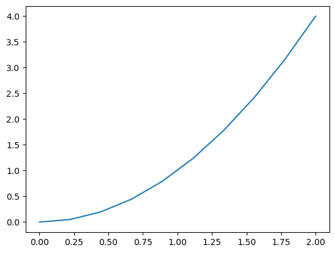
plt.scatter(X, y)
plt.show()
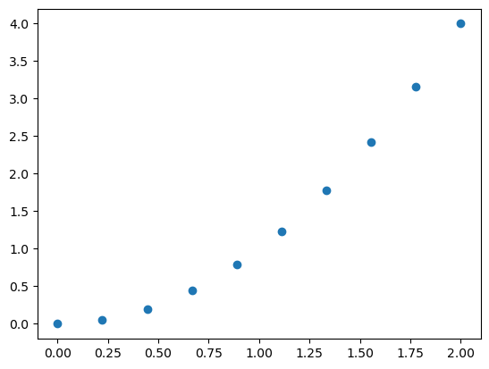
Styles Graphiques
Il existe beaucoup de styles a ajouter aux graphiques. Voici les plus importants a retenir :
- c : couleur de la ligne
- lw : epaisseur de la ligne (pour les graphiques plot)
- ls : style de la ligne (pour les graphiques plot)
- size : taille du point (pour les graphiques scatter)
- marker : style de points (pour les graphiques scatter)
- alpha : transparence du graphique
plt.plot(X, y, c='red', lw=4, ls='--', alpha=0.8)
plt.show()
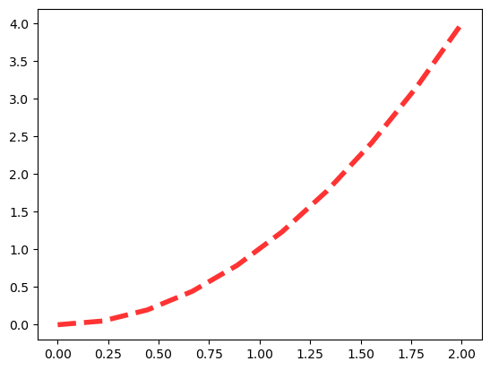
2. Cycle de vie d'une figure
Pour créer des figures proprements, on doit suivre le cycle de vie suivant :
- plt.figure(figsize())
- plt.plot()
- Extras (titre, axes, legendes)
- plt.show()
X = np.linspace(0, 2, 10)
plt.figure() # Création d'une figure
plt.plot(X, X**2, label='quadratique') # premiere courbe
plt.plot(X, X**3, label='cubique') # deuxieme courbe
# Extra information
plt.title('figure 1') # titre
plt.xlabel('axe x') # axes
plt.ylabel('axe y') # axes
plt.legend() # legend
plt.savefig('figure.png') # sauvegarde la figure dans le repertoire de travail
plt.show() # affiche la figure
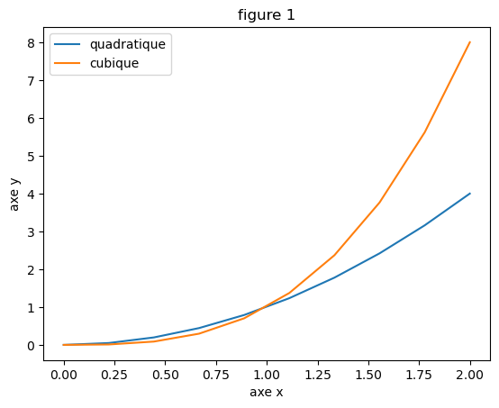
3. Subplots
Les subplots sont un autre éléments a ajouter pour créer plusieurs graphiques sur une meme figure
plt.subplot(2, 1, 1)
plt.plot(X, y, c='red')
plt.subplot(2, 1, 2)
plt.plot(X, y, c='blue')
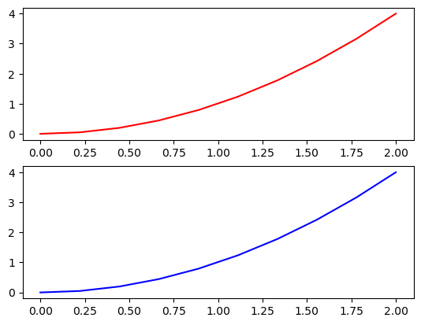
4. Méthode orientée objet
fig, ax = plt.subplots(2, 1, sharex=True) # partage le meme axe pour les subplots
ax[0].plot(x, y)
ax[1].plot(x, np.sin(x))
plt.show()

5. Exercice et Solution
Créez une fonction "graphique" qui permet de tracer sur une seule et meme figure une série de graphiques issue d'un dictionnaire contenant plusieurs datasets :
def graphique(dataset):
# Votre code ici...
return
# Voici le dataset utilisé
dataset = {f"experience{i}": np.random.randn(100) for i in range(4)}
dataset
-
{'experience0': array([-0.73026009, -0.92427352, -0.08103769, -1.22379832, -1.18126686,
0.2957312 , 0.39272515, 0.01122579, -0.11600724, -1.29350418,
2.6752107 , -1.29062695, -0.12075649, 0.09123813, 1.1436286 ,
-0.25004448, -1.43968537, -0.06824817, 1.13314051, -1.06826804,
-1.18135358, -0.54456852, 1.21778838, -2.32618343, 0.70904126,
-0.18413625, 0.05522584, 2.12229143, -0.29662499, 0.05422213,
-0.08935405, -1.62739285, 1.16757047, 0.65463555, 0.82203536,
-1.17622497, 0.48587818, -2.16429764, 0.91728199, -0.00522129,
-1.44509695, -0.44897878, 0.134164 , -0.22886226, 1.01169527,
-1.89824307, 1.8149836 , -0.63710983, -0.03998165, -1.32933688,
2.50262155, -0.84528715, 0.42998382, 0.05183741, 1.17336483,
-0.07624529, 1.73421861, -1.3702618 , 0.67624283, -1.27928307,
-0.78186879, -0.94432672, -1.13788396, 2.3236612 , -0.70829675,
-0.95457139, 0.02154338, -1.23156511, -0.41756011, 0.11409781,
1.62306725, 1.11382955, 0.18651338, -0.92995449, 0.28592715,
-0.91641865, -0.06565812, -0.69316861, -0.18863539, -0.3201722 ,
0.36022583, -0.08469015, -0.0238215 , -1.13330544, 0.73652928,
2.12684884, -0.79042905, 0.76473214, 0.14853273, 1.35926758,
-1.31924071, -2.15249297, 1.23560458, 1.56799108, 0.22852547,
0.9405575 , -0.36849986, 0.55496224, 1.57797318, 0.21579975]),
'experience1': array([-0.24155788, 0.30107105, -1.15468321, -0.28333408, 0.16999801,
0.90692494, 1.11703406, 0.3644038 , 0.55883134, 1.40283118,
-0.23978451, 0.10135075, 1.28882754, -0.47486126, 0.19953529,
-3.40960179, 1.07099421, 1.29455924, -0.42990292, -1.48918634,
1.12212476, -0.43440688, -0.92336374, 0.23950397, -2.10815766,
-0.952912 , -0.42048761, 0.11807541, 0.48471941, 1.21904548,
-0.36734577, -0.52359341, 0.52922285, -1.38752467, -0.22836553,
1.00032629, 1.56252921, -0.87301181, -1.69982515, 0.18110546,
-1.55296498, 0.42493433, -3.20017158, -0.17138241, 0.11837763,
0.02653488, 1.87891042, 1.31182259, -0.15590623, 1.30269688,
0.68004521, 0.6432393 , -0.14321066, -0.162323 , 0.2667317 ,
1.26217026, -0.59837269, 0.33758583, 0.75804003, -0.55230605,
1.1451438 , -0.65017033, 1.1316307 , -1.22337189, -0.83246816,
0.77424322, 0.13344735, -0.1234697 , 0.13046451, -1.95465787,
-1.55350995, -0.31354787, 1.39846424, -0.03660721, -0.3360641 ,
0.02677512, -0.26752349, -0.47482143, -0.05680952, -0.75266157,
0.27488487, 0.88449973, 2.15381445, -0.41400153, 1.21381671,
0.92232479, 0.05508854, -0.15076683, -0.49421398, -0.80543942,
1.005282 , -0.80494514, 0.0976059 , -0.54615799, 0.90408833,
0.71348351, -2.63319961, 0.9287799 , -0.79177716, 0.3092041 ]),
'experience2': array([-5.12597429e-01, 1.73003128e+00, 1.17202199e+00, -1.06576833e+00,
-1.74607531e-02, 2.59303340e-01, 2.30789670e-01, -2.95424007e-01,
4.40310588e-01, -7.37388873e-01, -5.96612611e-01, -1.08326391e+00,
-2.66861790e-01, 1.17219255e+00, -3.39538474e-01, -1.34596216e+00,
4.48311815e-01, 1.60280686e+00, -7.52366048e-01, 3.82349278e-01,
-4.27683380e-01, 1.26779568e+00, -8.60842685e-01, -2.24014654e+00,
7.10992082e-01, 4.86254905e-02, 7.54475048e-01, 1.06103843e+00,
-4.30201480e-01, 2.85523038e-01, -1.30984603e+00, -7.73672748e-01,
2.50052656e-01, 1.65610619e+00, -1.24072618e+00, -8.72252224e-02,
-1.37556986e+00, 1.74734402e+00, 8.86713546e-01, 1.27169995e+00,
-1.63568748e+00, 1.68359702e+00, 6.37827942e-01, 6.89892793e-01,
-2.11197059e+00, 4.32380396e-01, -5.22214645e-01, 7.40351903e-01,
-7.31645721e-01, 2.67625162e-02, 5.58620457e-01, 5.03180328e-01,
6.04514128e-01, -1.11078439e+00, 1.11601957e+00, 1.22319459e-02,
-1.19131202e+00, -1.83806861e+00, 4.78537303e-01, -2.60253515e-01,
1.49969811e+00, -3.71502271e-01, -1.14162770e+00, -9.01482979e-02,
-5.45700614e-02, 6.94711539e-03, -9.75336368e-01, 1.04285873e+00,
-4.38055566e-01, -1.46640876e+00, -1.38246613e+00, -2.05667363e-01,
-3.23673706e-01, 1.79675294e-01, -6.58844333e-01, -1.99557923e-01,
6.75617386e-01, 5.75747225e-01, -1.22675928e+00, -4.89839090e-01,
-1.97708739e+00, -2.69253982e-01, -1.32200095e+00, 6.38700435e-01,
-2.50892526e-01, 2.87863055e-01, 5.52487360e-01, -1.32015732e-02,
8.79429870e-02, -8.23799430e-01, -3.44677647e-04, 1.55475689e+00,
-1.40971537e+00, -1.30560730e+00, -4.94770804e-01, -1.52698567e+00,
-1.92416371e-01, 6.85906705e-01, -1.07308979e+00, -3.81491669e-01]),
'experience3': array([ 7.71742208e-01, 7.43395102e-01, -8.57320299e-01, 1.27738500e+00,
-1.20058247e+00, -6.31858798e-01, -1.79586843e-01, -3.58917661e-01,
-5.06229886e-01, 1.11679840e+00, 4.47015274e-01, -3.57012093e-02,
-2.07746859e-01, 7.45201997e-01, -8.60144774e-02, -7.74830937e-01,
9.98308016e-02, -1.62718469e+00, -7.16245656e-01, 2.54944575e-01,
-1.08007733e+00, 1.06121570e-01, 9.59381902e-01, -1.61225335e+00,
-1.89157261e-01, 4.37576628e-01, 9.80100832e-01, 1.20117865e+00,
-1.17368596e-01, -7.13839696e-01, -3.22907513e-01, -7.82970395e-01,
-1.89630963e+00, 1.20057482e-01, -6.96400094e-01, -3.60828403e-01,
1.08879832e-01, -1.92737758e+00, 1.59559531e+00, 1.01248097e+00,
-1.18200879e+00, 1.70696607e+00, -6.74532292e-01, -6.90274103e-01,
1.61095193e-01, -2.26165717e+00, 3.17204383e-01, -1.13673558e+00,
3.39706210e-01, -3.75419888e-01, 2.33796495e-01, -1.92492569e+00,
1.13647371e+00, 2.85071439e-01, -1.05177693e-01, 2.14172309e-01,
-5.54767068e-02, 2.56561508e-01, 1.35623426e+00, 1.87823082e-01,
-5.79147798e-01, 9.37895632e-01, 1.33429951e-01, 1.37295686e+00,
3.02159457e-01, 1.73702727e-01, 1.54463863e+00, -1.61508839e+00,
6.15286343e-01, -2.32218491e+00, 1.13705692e+00, -1.18240558e-02,
-6.24844674e-01, 2.07654599e-02, -3.11602339e-01, 8.52033954e-01,
3.97827839e-01, -3.51421999e-02, -4.64526671e-01, 1.46241945e-01,
1.54586608e-01, -1.95105165e+00, -5.74770340e-02, -9.53007702e-01,
5.02547984e-01, 3.04018409e-01, 2.88151848e-01, 5.06125828e-01,
-8.39948882e-01, 2.93911678e-02, 8.24943592e-01, 8.21718927e-01,
-3.85923511e-01, 1.46600576e+00, 1.83431810e-01, 1.39626432e+00,
3.20347667e-01, 1.24387799e-01, -2.21409972e+00, 2.30476533e-03])}
💡 Cliquez ici pour voir la solution
SOLUTION
def graphique(data):
n = len(data)
plt.figure(figsize=(12, 20))
for k, i in zip(data.keys(), range(1, n+1)):
plt.subplot(n, 1, i)
plt.plot(data[k])
plt.title(k)
plt.show()
graphique(dataset)
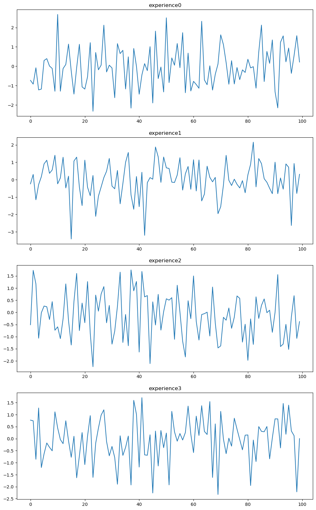
Matplotlib : Top Graphiques
Sommaire :
- Chapitre 1 : Graphique de Classification avec Scatter()
- Chapitire 2 : Graphiques 3D
- Chapitre 3 : Histogrammes
- Chapitre 4 : Graphiques ContourPlot()
- Chapitre 5 :Imshow()
import numpy as np
import matplotlib.pyplot as plt
1. Graphique de Classification avec Scatter()
from sklearn.datasets import load_iris
iris = load_iris()
x = iris.data
y = iris.target
print(f'x contient {x.shape[0]} exmples et {x.shape[1]} variables')
print(f'il y a {np.unique(y).size} classes')
-
x contient 150 exmples et 4 variables
il y a 3 classes
n = x.shape[1]
plt.figure(figsize=(12, 8))
for i in range(n):
plt.subplot(n//2, n//2, i+1)
plt.scatter(x[:, 0], x[:, i], c=y)
plt.xlabel('0')
plt.ylabel(i)
plt.colorbar(ticks=list(np.unique(y)))
plt.show()
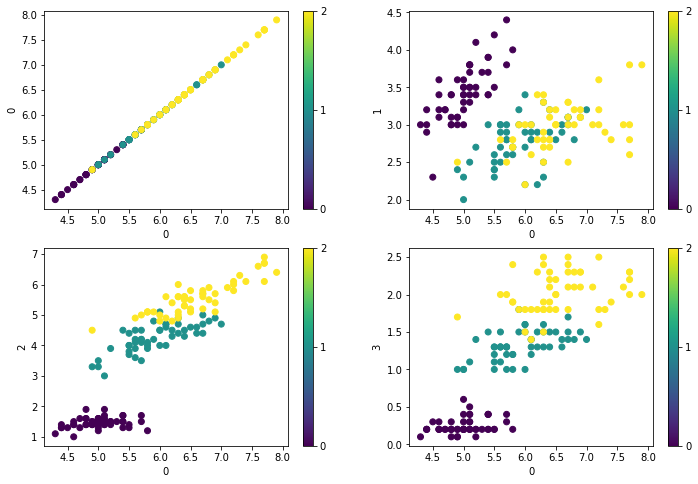
2. Graphiques 3D
from mpl_toolkits.mplot3d import Axes3D
ax = plt.axes(projection='3d')
ax.scatter(x[:, 0], x[:, 1], x[:,2], c=y)
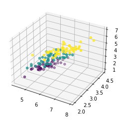
f = lambda x, y: np.sin(x) + np.cos(x+y)
X = np.linspace(0, 5, 50)
Y = np.linspace(0, 5, 50)
X, Y = np.meshgrid(X, Y)
Z = f(X, Y)
ax = plt.axes(projection='3d')
ax.plot_surface(X, Y, Z, cmap='plasma')
plt.show()
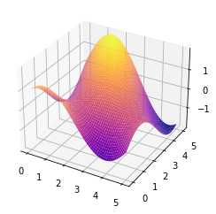
3. Histogrammes
x = np.random.randn(1000)
plt.figure(figsize=(12, 3))
plt.subplot(121)
plt.hist(x, bins=10)
plt.title('bins=10')
plt.subplot(122)
plt.hist(x, bins=50)
plt.title('bins= 50')
plt.show()
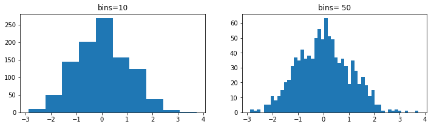
x = iris.data
plt.hist2d(x[:,0], x[:,1], cmap='Blues')
plt.xlabel('longueur sépal')
plt.ylabel('largeur sépal')
plt.colorbar()
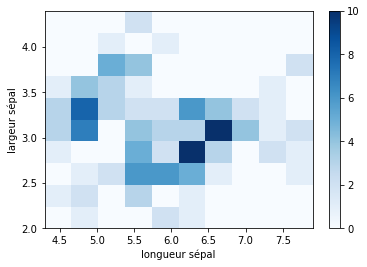
histogramme d'une image
from scipy import misc face = misc.face(gray=True)
plt.figure(figsize=(12, 4)) plt.subplot(121) plt.imshow(face, cmap='gray') plt.subplot(122) plt.hist(face.ravel(), bins=255) plt.show()
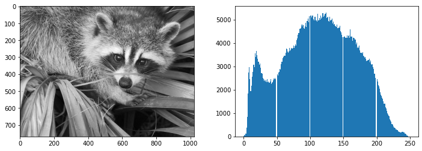
4. Graphiques ContourPlot()
f = lambda x, y: np.sin(x) + np.cos(x+y)*np.cos(x)
X = np.linspace(0, 5, 50)
Y = np.linspace(0, 5, 50)
X, Y = np.meshgrid(X, Y)
Z = f(X, Y)
plt.contour(X, Y, Z, 20, colors='black')
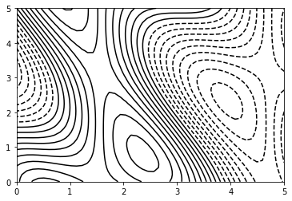
plt.contourf(X, Y, Z, 20, cmap='RdGy')
plt.colorbar()
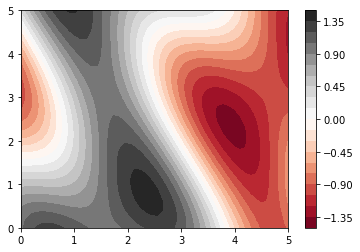
5. Imshow()
plt.figure(figsize=(12, 3))
# Simple graphique imshow()
X = np.random.randn(50, 50)
plt.subplot(131)
plt.imshow(X)
plt.title('random normal')
# Matrice de corrélation des iris
from sklearn.datasets import load_iris
iris = load_iris()
X = iris.data
y = iris.target
plt.subplot(132)
plt.imshow(np.corrcoef(X.T, y))
plt.title('Iris Corrélation')
# Matrice f(X, Y) = sin(X) + cos(Y)
X = np.linspace(0, 5, 100)
Y = np.linspace(0, 5, 100)
X, Y = np.meshgrid(X, Y)
plt.subplot(133)
plt.imshow(f(X, Y))
plt.colorbar()
plt.title('f(x, y) = sin(x) + cos(y)')
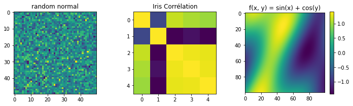
Chapitre 4 : Scipy
Scipy est une bibliothèque puissante et polyvalente conçue pour compléter NumPy. Elle offre des outils avancés pour le calcul scientifique, indispensables dans des domaines comme le machine learning, l'analyse de données, le traitement de signal, le traitement d'images, et bien plus encore.
Dans ce chapitre, vous découvrirez certaines des fonctionnalités les plus utiles de Scipy, telles que l'interpolation, l'optimisation, le traitement de signal, et le traitement d'images. Ces outils permettent de résoudre des problèmes complexes avec des solutions élégantes et performantes, tout en restant simples à utiliser.
Pourquoi utiliser Scipy ?
- Large éventail de modules spécialisés : Scipy propose des modules dédiés à des tâches spécifiques (optimisation, intégration, traitement d'images, statistiques, etc.).
- Performance et simplicité : Basée sur NumPy, Scipy permet d'exécuter des calculs rapides et précis sans compromettre la simplicité.
- Applications pratiques : De la visualisation à la manipulation avancée des données, elle est essentielle dans de nombreux projets en machine learning et en analyse de données.
Ce que vous allez apprendre dans ce chapitre
1. Interpolation
Découvrez comment combler les lacunes dans des ensembles de données ou reconstruire des signaux manquants à l’aide des fonctions d'interpolation.
2. Optimisation
Explorez des outils pour trouver des minimums locaux et globaux, ajuster des modèles statistiques, ou résoudre des problèmes de programmation linéaire.
3. Traitement du Signal
Plongez dans les techniques de filtrage, de transformation de Fourier, et d'analyse de tendances pour manipuler des signaux avec précision.
4. Traitement d'Images
Découvrez les outils de Scipy pour nettoyer, segmenter, et analyser des images de manière efficace.
**5. Application : Image processing (cas réel)
Un peu d'application !
L’objectif de ce chapitre est de vous fournir une boîte à outils polyvalente pour résoudre des problèmes réels, en s'appuyant sur des exemples concrets et visuels. Que ce soit pour analyser des signaux ou traiter des images, Scipy est une bibliothèque incontournable pour tout data scientist ou ingénieur.
Prêt à commencer ? Rendez-vous dans la première section : Scipy : Interpolation !
Scipy : Interpolation
import numpy as np
import matplotlib.pyplot as plt
Interpoler un signal est parfois tres utile s'il vous manque des données dans un Dataset. Mais c'est une technique dangereuse, qui peut parfois transformer la réalité des choses !
import numpy as np
import matplotlib.pyplot as plt
# Création d'un Dataset
x = np.linspace(0, 10, 10)
y = np.sin(x)
plt.scatter(x, y)
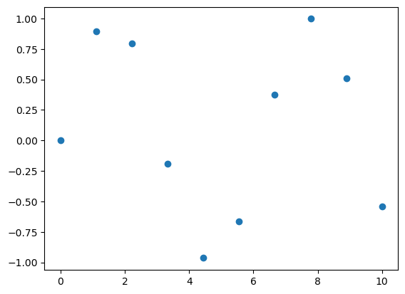
from scipy.interpolate import interp1d
# création de la fonction interpolation f
f = interp1d(x, y, kind='cubic')
# résultats de la fonction interpolation f sur de nouvelles données
new_x = np.linspace(0, 10, 50)
result = f(new_x)
# visualisation avec matplotlib
plt.scatter(x, y)
plt.plot(new_x, result, c='r')
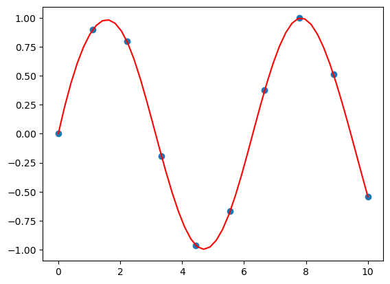
Scipy : Optimisation
On trouve beaucoup de fonctions dans le module optimize. Certaines permettent de faire des minimisations locales, ou globales, d'autres permette de développer des modeles statistiques avec la méthode des moindres carrés. On trouve également des fonctions pour faire de la programmation linéaire.
import numpy as np
import matplotlib.pyplot as plt
curve_fit
# Création d'un Dataset avec du bruit "normal"
x = np.linspace(0, 2, 100)
y = 1/3*x**3 - 3/5 * x**2 + 2 + np.random.randn(x.shape[0])/20
plt.scatter(x, y)
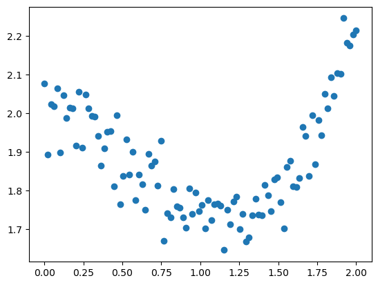
# Définition d'un modele statistique sensé "coller" au dataset ci-dessus
def f (x, a, b, c, d):
return a * x**3 + b * x**2 + c * x + d
from scipy import optimize
# curve_fit permet de trouver les parametres du modele f grace a la méthode des moindres carrés
params, param_cov = optimize.curve_fit(f, x, y)
# Visualisation des résultats.
plt.scatter(x, y)
plt.plot(x, f(x, params[0], params[1], params[2], params[3]), c='g', lw=3)
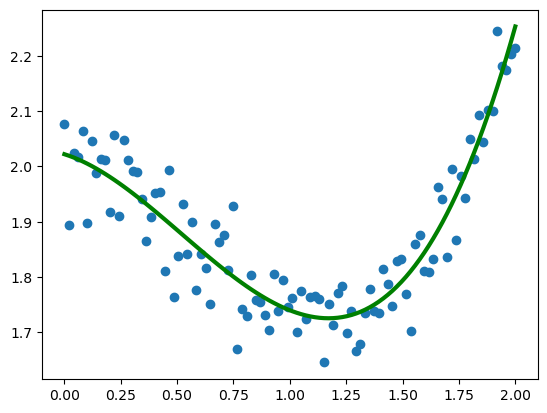
Minimisation 1D
la fonction optimize.minimize est utile pour trouver un minimum local dans une fonction a N dimensions
# Définition d'une fonction a 1 Dimension
def f (x):
return x**2 + 15*np.sin(x)
# Visualisation de la fonction
x = np.linspace(-10, 10, 100)
plt.plot(x, f(x))
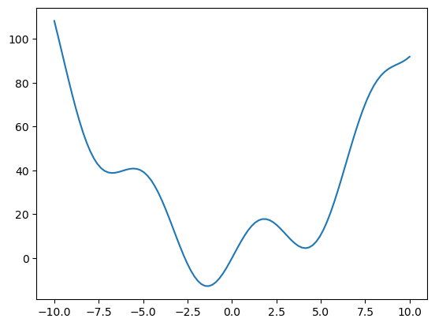
# Définition d'un point x0 pour l'algorithme de minimisation
x0=-5
result = optimize.minimize(f, x0=x0).x # résultat de la minimisation
# Visualisation du résultat
plt.plot(x, f(x), lw=3, zorder=-1) # Courbe de la fonction
plt.scatter(x0, f(x0), s=200, marker='+', c='g', zorder=1, label='initial') # point initial
plt.scatter(result, f(result), s=100, c='r', zorder=1, label='final') # point final
plt.legend()
plt.show()
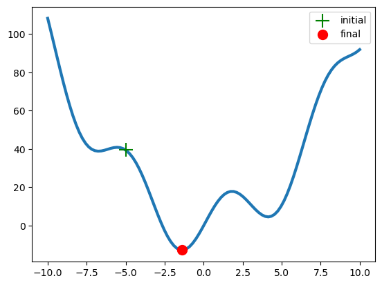
Minimisation 2D
# Définition d'une fonction 2D. X est un tableau numpy a 2-Dimension
def f (x):
return np.sin(x[0]) + np.cos(x[0]+x[1])*np.cos(x[0])
# Génération de la fonction sur un espace 2D.
x = np.linspace(-3, 3, 100)
y = np.linspace(-3, 3, 100)
x, y = np.meshgrid(x, y)
# Visualisation de la fonction
plt.contour(x, y, f(np.array([x, y])), 20)
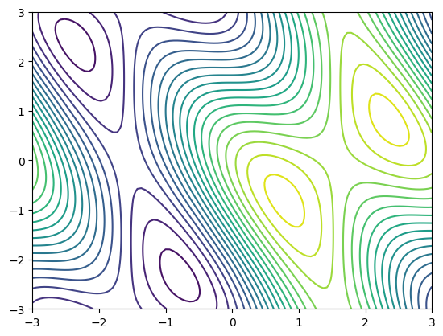
# Exemple de fonction à minimiser (parabole en 2D)
def f(v):
x, y = v[0], v[1]
return x**2 + y**2
# Placement d'un point x0 initial aux coordonnées (0, 0)
x0 = np.array([0, 0]) # Tableau 1D
# Minimisation de la fonction
result = optimize.minimize(f, x0=x0).x
print('Le minimum est aux coordonnées', result)
# Création de la grille pour la visualisation
x = np.linspace(-5, 5, 100)
y = np.linspace(-5, 5, 100)
X, Y = np.meshgrid(x, y)
Z = f(np.array([X, Y]))
# Visualisation du résultat
plt.contour(X, Y, Z, 20, cmap='viridis') # Tracer les contours de la fonction
plt.scatter(x0[0], x0[1], marker='+', c='r', s=100, label='Initial') # Point initial
plt.scatter(result[0], result[1], c='g', s=100, label='Final') # Point final
plt.legend()
plt.show()
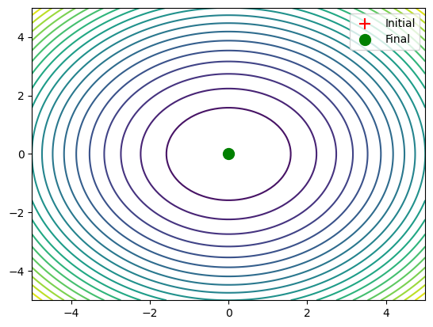
Scipy : Traitement du signal
Le module scipy.signal contient beaucoup de fonctions de convolution et de filtres pour faire du traitement du signal. La fonction signal.detrend est parfaite pour éliminer une tendance linéaire dans un signal. Utile pour beaucoup d'applications !
import numpy as np
import matplotlib.pyplot as plt
Le module scipy.fftpack contient des fonctions tres puissantes et simples d'utilisation pour effectuer des transformations de Fourier
# Création d'un Dataset avec une tendance linéaire
x = np.linspace(0, 20, 100)
y = x + 4*np.sin(x) +np.random.randn(x.shape[0])
plt.plot(x, y)
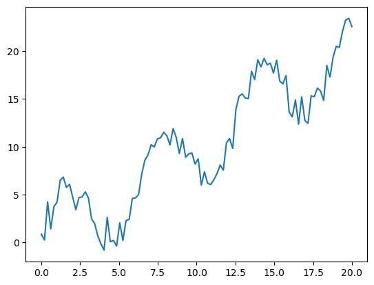
from scipy import signal
# Élimination de la tendance linéaire
new_y = signal.detrend(y)
# Visualisation des résultats
plt.plot(x, y, label='originel')
plt.plot(x, new_y, label='detrend')
plt.legend()
plt.show()
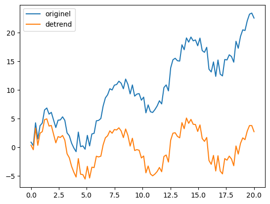
Transformation de Fourier (FFT)
La transformation de Fourier est une technique mathématique puissante et normalement complexe a mettre en oeuvre. Heureusement scipy.fftpack rend cette technique tres simple a implémenter
La transformation de Fourier permet d'analyser les fréquences qui composent un signal périodique (qui se répete avec le temps). Cette opération produit un graphique que l'on appelle Spectre.
Une fois le Spectre généré, il est possible de filtrer les bruits indésirables, ou bien de sélectionner seulement certaines fréquences, ou d'en atténuer d'autres... les possibilités sont infinies.
Dans l'exemple ci-dessous, nous voyons comment filtrer un signal noyé dans du bruit.
# Création d'un signal périodique noyé dans du bruit.
x = np.linspace(0, 30, 1000)
y = 3*np.sin(x) + 2*np.sin(5*x) + np.sin(10*x) + np.random.random(x.shape[0])*10
plt.plot(x, y)
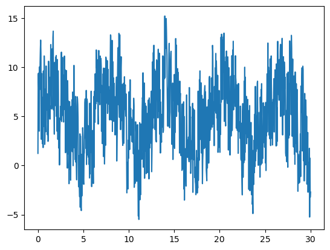
from scipy import fftpack
# création des variables Fourier et Fréquences, qui permettent de construire le spectre du signal.
fourier = fftpack.fft(y)
power = np.abs(fourier) # la variable power est créée pour éiminer les amplitudes négatives
frequences = fftpack.fftfreq(y.size)
plt.plot(np.abs(frequences), power)
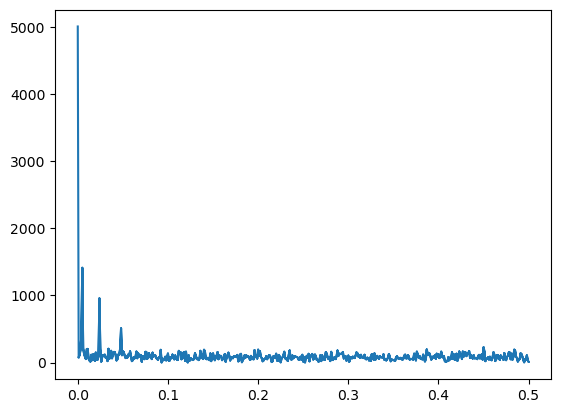
# filtre du spectre avec du boolean indexing de Numpy
fourier[power<400] = 0
# Visualisation du spetre propre
plt.plot(np.abs(frequences), np.abs(fourier))
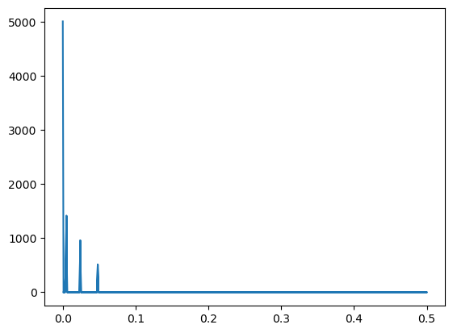
# Transformation de Fourier Inverse: genere un nouveau signal temporel depuis le spectre filtré
filtered_signal = fftpack.ifft(fourier)
# Visualisation des résultats
plt.figure(figsize=(12, 8))
plt.plot(x, y, lw=0.5, label='signal originel')
plt.plot(x, filtered_signal, lw=3, label='signal filtré')
plt.legend()
plt.show()
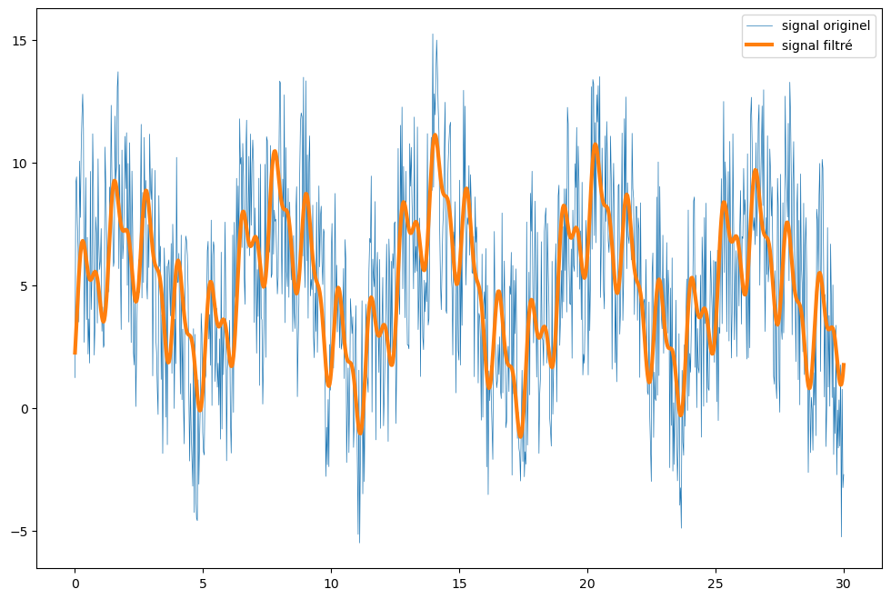
Scipy : Image processing
scipy.ndimage propose de nombreuses actions pour le traitement d'images: convolutions, filtres de Gauss, méthode de mesures, et morphologie.
import numpy as np
import matplotlib.pyplot as plt
La morphologie est une technique qui permet de transformer une matrice (et donc une image) par le déplacement d'une structure sur chaque pixel de l'image. Lorsqu'un pixel "blanc" est visité, la structure peut effectuer une opération:
- de dilation: imprime des pixels
- d'érosion : efface des pixels
Cette technique peut-etre utile pour nettoyer une image des artefacts qui peuvent la composer.
from scipy import ndimage
# Création d'une image avec quelques artefacts
np.random.seed(0)
X = np.zeros((32, 32))
X[10:-10, 10:-10] = 1
X[np.random.randint(0,32,30),np.random.randint(0,32,30)] = 1 #ajout d'artefacts aléatoires
plt.imshow(X)

# opération de binary_opening = érosion puis dilation
open_X = ndimage.binary_opening(X)
plt.imshow(open_X)
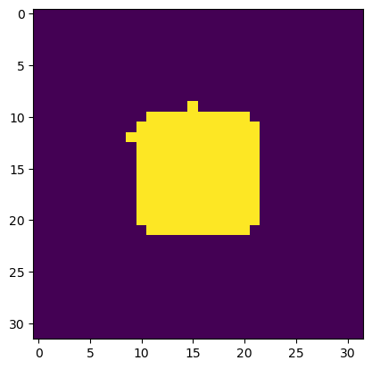
Scipy : Application : Image processing (cas réel)
import numpy as np
import matplotlib.pyplot as plt
Vous pouvez télécharger sur le book
# importer l'image avec pyplot
image = plt.imread('bacteria.png')
image = image[:,:,0] # réduire l'image en 2D
plt.imshow(image, cmap='gray') # afficher l'image
image.shape
(507, 537)
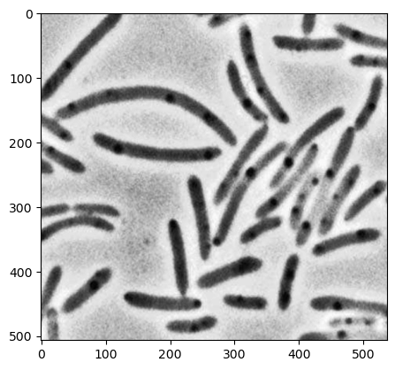
# copy de l'image, puis création d'un histogramme
image_2 = np.copy(image)
plt.hist(image_2.ravel(), bins=255)
plt.show()
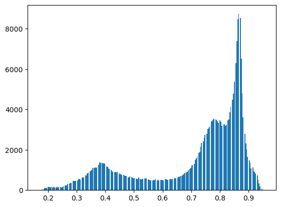
# boolean indexing: création d'une image binaire
image= image<0.6
plt.imshow(image)
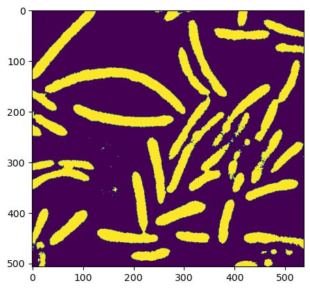
# morphologie utilisée pour enlever les artefacts
open_image = ndimage.binary_opening(image)
plt.imshow(open_image)
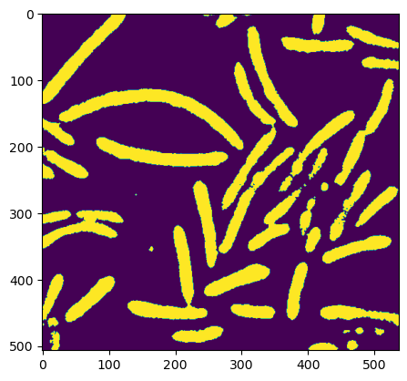
# Segmentation de l'image: label_image contient les différents labels et n_labels est le nombre de labels
label_image, n_labels = ndimage.label(open_image)
print(f'il y a {n_labels} groupes')
-
il y a 53 groupes
# Visualisation de l'image étiquetée
plt.imshow(label_image)
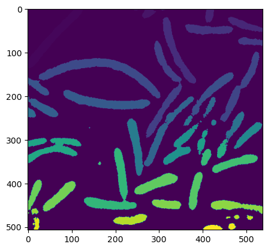
# Mesure de la taille de chaque groupes de label_images (fait la somme des pixels)
sizes = ndimage.sum(open_image, label_image, range(n_labels))
# Visualisation des résultats
plt.scatter(range(n_labels), sizes)
plt.xlabel('bactérie ID')
plt.ylabel('taille relative')
plt.show()
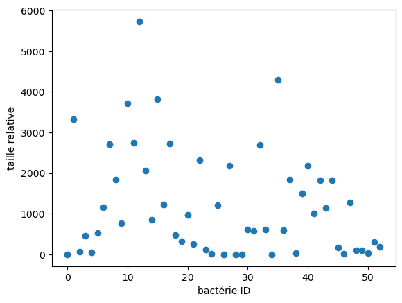
Chapitre 5 : Pandas
Pandas est une bibliothèque incontournable pour la manipulation et l’analyse de données en Python. Elle offre des structures de données puissantes et flexibles, comme les DataFrames, qui permettent de travailler efficacement avec des données tabulaires. Ce chapitre vous apprendra les bases de Pandas ainsi que des techniques avancées pour explorer, nettoyer, et analyser vos données.
Plan du chapitre
-
Pandas : Les bases et Analyse du Titanic
- Introduction aux structures de données fondamentales : Series et DataFrames.
- Analyse de données avec un cas pratique : l’étude des passagers du Titanic.
-
- Manipulation de données temporelles.
- Analyse et visualisation de tendances dans des séries chronologiques.
Pourquoi utiliser Pandas ?
- Facilité de manipulation : Pandas simplifie des opérations complexes comme le nettoyage, le filtrage, ou le regroupement de données.
- Interopérabilité : Compatible avec d'autres bibliothèques comme NumPy, Matplotlib et Scipy.
- Applications pratiques : Pandas est utilisé dans des domaines variés, comme l’analyse financière, le machine learning, ou la gestion de données.
Ce que vous allez apprendre
- Manipuler des datasets avec les DataFrames de Pandas.
- Charger, explorer et nettoyer des données.
- Utiliser les fonctionnalités avancées de Pandas pour analyser des séries temporelles.
Cas Pratiques
1. Les bases de Pandas et l'analyse du Titanic
Nous explorerons un jeu de données bien connu, celui des passagers du Titanic, pour comprendre les bases de Pandas. Vous apprendrez à :
- Charger des données depuis différents formats (CSV, Excel, etc.).
- Explorer et filtrer les données.
- Calculer des statistiques descriptives et visualiser les résultats.
2. Analyse de séries temporelles
Les séries temporelles sont essentielles dans des domaines comme la finance et la prévision. Vous apprendrez à :
- Manipuler des indices temporels.
- Rééchantillonner et lisser des données.
- Identifier des tendances et des patterns cycliques.
Ce chapitre vous donnera une maîtrise solide de Pandas et vous permettra de manipuler et analyser vos propres datasets avec facilité. Plongeons dès maintenant dans le monde fascinant de la manipulation de données avec Pandas !
Pandas : Les bases et Analyse du Titanic
Sommaire :
- Chapitre 1 : Charger vos données dans un DataFrame Pandas
- Chapitire 2 : Nettoyer votre Dataset avec drop(), dropna() et fillna()
- Chapitre 3 : Groupby() et value_counts()
- Chapitre 4: Exercice et Solution
📂 Télécharger la base de donnée
import numpy as np
import matplotlib.pyplot as plt
import pandas as pd
1. Charger vos données dans un DataFrame Pandas
Les options les plus courantes :
- read_csv
- read_excel
data = pd.read_excel('titanic.xls')
data.shape
data.head()
-
pclass survived name sex age sibsp parch ticket fare cabin embarked boat body home.dest
0 1 1 Allen, Miss. Elisabeth Walton female 29.0000 0 0 24160 211.3375 B5 S 2 NaN St Louis, MO
1 1 1 Allison, Master. Hudson Trevor male 0.9167 1 2 113781 151.5500 C22 C26 S 11 NaN Montreal, PQ / Chesterville, ON
2 1 0 Allison, Miss. Helen Loraine female 2.0000 1 2 113781 151.5500 C22 C26 S NaN NaN Montreal, PQ / Chesterville, ON
3 1 0 Allison, Mr. Hudson Joshua Creighton male 30.0000 1 2 113781 151.5500 C22 C26 S NaN 135.0 Montreal, PQ / Chesterville, ON
4 1 0 Allison, Mrs. Hudson J C (Bessie Waldo Daniels) female 25.0000 1 2 113781 151.5500 C22 C26 S NaN NaN Montreal, PQ / Chesterville, ON
data.describe()
-
pclass survived age sibsp parch fare body
count 1309.000000 1309.000000 1046.000000 1309.000000 1309.000000 1308.000000 121.000000
mean 2.294882 0.381971 29.881135 0.498854 0.385027 33.295479 160.809917
std 0.837836 0.486055 14.413500 1.041658 0.865560 51.758668 97.696922
min 1.000000 0.000000 0.166700 0.000000 0.000000 0.000000 1.000000
25% 2.000000 0.000000 21.000000 0.000000 0.000000 7.895800 72.000000
50% 3.000000 0.000000 28.000000 0.000000 0.000000 14.454200 155.000000
75% 3.000000 1.000000 39.000000 1.000000 0.000000 31.275000 256.000000
max 3.000000 1.000000 80.000000 8.000000 9.000000 512.329200 328.000000
2. Nettoyer votre Dataset avec drop(), dropna() et fillna()
data = data.drop(['name', 'sibsp', 'parch', 'ticket', 'fare', 'cabin', 'embarked', 'boat', 'body', 'home.dest'], axis=1)
data = data.dropna(axis=0)
data.shape
-
(1046, 4)
data['age'].hist()
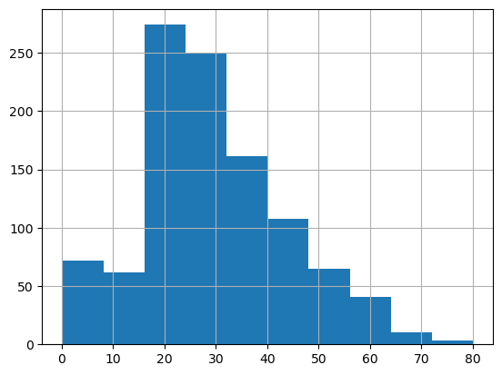
3. Groupby() et value_counts()
data.groupby(['sex']).mean()
-
pclass survived age
sex
female 2.048969 0.752577 28.687071
male 2.300912 0.205167 30.585233
data.groupby(['sex', 'pclass']).mean()
-
survived age
sex pclass
female 1 0.962406 37.037594
2 0.893204 27.499191
3 0.473684 22.185307
male 1 0.350993 41.029250
2 0.145570 30.815401
3 0.169054 25.962273
data['pclass'].value_counts()
-
pclass
3 501
1 284
2 261
Name: count, dtype: int64
data[data['age'] < 18]['pclass'].value_counts()
-
pclass
3 106
2 33
1 15
Name: count, dtype: int64
4. Exercice et Solution
- Créer des catégories d'ages avec la fonction map() de pandas
- Créer des catégories de genres avec cat.codes
💡 Cliquez ici pour voir la solution
Solution
def category_ages(age):
if age <= 20:
return '<20 ans'
elif (age > 20) & (age <= 30):
return '20-30 ans'
elif (age > 30) & (age <= 40):
return '30-40 ans'
else:
return '+40 ans'
data['age'] = data['age'].map(category_ages)
data['age']
-
0 20-30 ans
1 <20 ans
2 <20 ans
3 20-30 ans
4 20-30 ans
...
1301 +40 ans
1304 <20 ans
1306 20-30 ans
1307 20-30 ans
1308 20-30 ans
Name: age, Length: 1046, dtype: object
data['sex'].astype('category').cat.codes
-
0 0
1 1
2 0
3 1
4 0
..
1301 1
1304 0
1306 1
1307 1
1308 1
Length: 1046, dtype: int8
Pandas : séries temporelles
Sommaire :
- Chapitre 1 : Travailler avec des séries Temporelles
- Chapitire 2 : Resample
- Chapitre 3 : Aggregate
- Chapitre 4 : Moving Average et EWM
- Chapitre 5 : Comparaison de 2 série temporelles
- Chapitre 6 : Exercice et Solution
📂 Télécharger la base de donnée bitcoin
📂 Télécharger la base de etherum
1. Travailler avec des séries Temporelles
import numpy as np
import matplotlib.pyplot as plt
import pandas as pd
bitcoin = pd.read_csv('BTC-EUR.csv', index_col='Date', parse_dates=True)
bitcoin.head()
-
Open High Low Close Adj Close Volume
Date
2011-10-04 3.700 3.821 3.746 3.750 3.750 1357
2011-10-05 3.750 3.820 3.650 3.676 3.676 3349
2011-10-06 3.676 3.743 3.450 3.550 3.550 6642
2011-10-07 3.550 3.590 2.900 3.293 3.293 7135
2011-10-08 3.293 3.283 2.872 2.890 2.890 2007
bitcoin['Close'].plot(figsize=(9, 6))
plt.show()
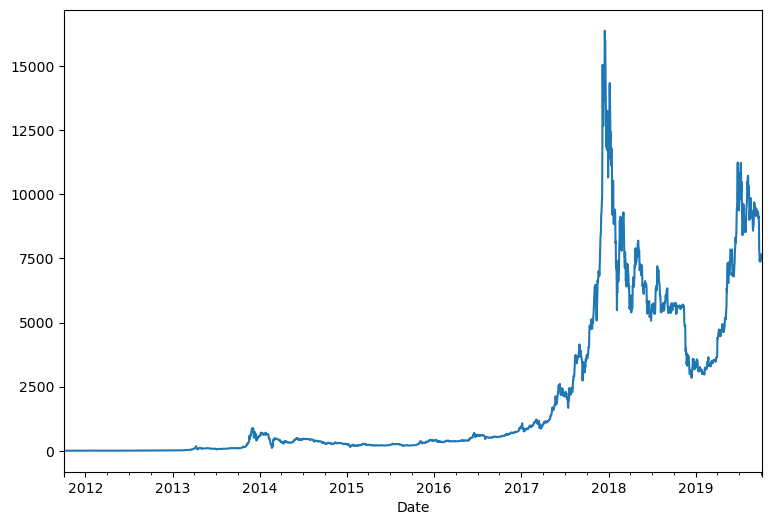
bitcoin.index
-
DatetimeIndex(['2011-10-04', '2011-10-05', '2011-10-06', '2011-10-07',
'2011-10-08', '2011-10-09', '2011-10-10', '2011-10-11',
'2011-10-12', '2011-10-13',
...
'2019-09-25', '2019-09-26', '2019-09-27', '2019-09-28',
'2019-09-29', '2019-09-30', '2019-10-01', '2019-10-02',
'2019-10-03', '2019-10-04'],
dtype='datetime64[ns]', name='Date', length=2923, freq=None)
bitcoin.loc['2017':'2019','Close'].plot()
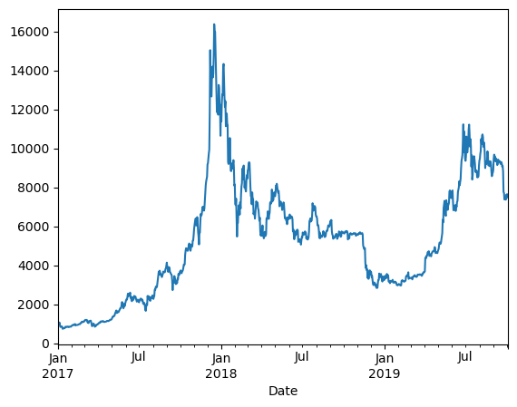
2. Resample
bitcoin.loc['2019', 'Close'].resample('M').mean().plot()
plt.show()
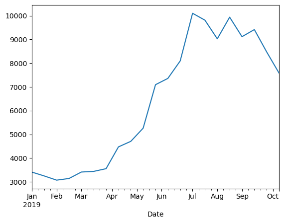
bitcoin.loc['2019', 'Close'].resample('2W').mean().plot()
plt.show()
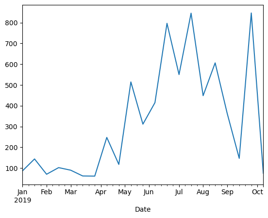
bitcoin.loc['2019', 'Close'].resample('2W').std().plot()
plt.show()

plt.figure(figsize=(12, 8))
bitcoin.loc['2019', 'Close'].plot()
bitcoin.loc['2019', 'Close'].resample('M').mean().plot(label='moyenne par mois', lw=3, ls=':', alpha=0.8)
bitcoin.loc['2019', 'Close'].resample('W').mean().plot(label='moyenne par semaine', lw=2, ls='--', alpha=0.8)
plt.legend()
plt.show()
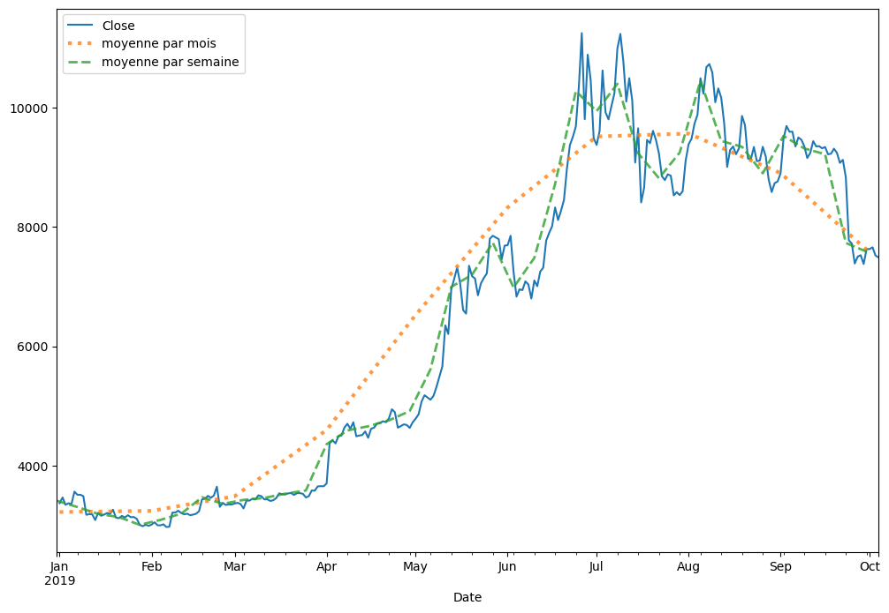
3. Aggregate
m = bitcoin['Close'].resample('W').agg(['mean', 'std', 'min', 'max'])
plt.figure(figsize=(12, 8))
m['mean']['2019'].plot(label='moyenne par semaine')
plt.fill_between(m.index, m['max'], m['min'], alpha=0.2, label='min-max par semaine')
plt.legend()
plt.show()
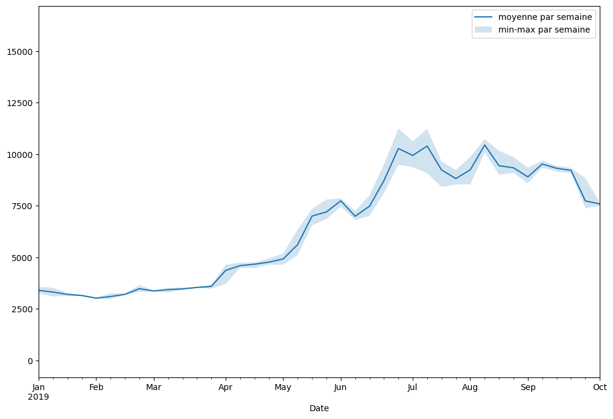
bitcoin.loc['2019', 'Close'].resample('W').agg(['mean', 'std', 'min', 'max']).plot()
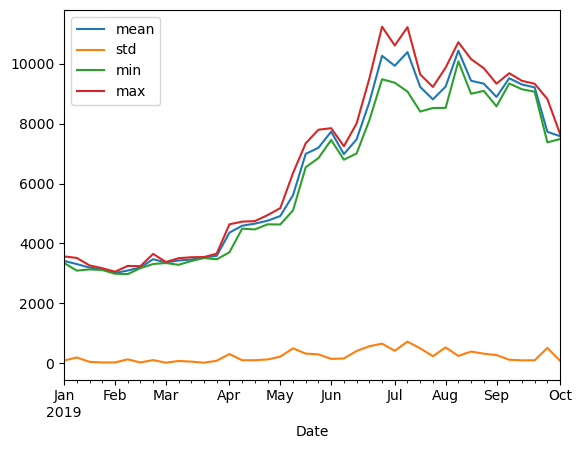
4. Moving Average et EWM
plt.figure(figsize=(12, 8))
bitcoin.loc['2019-09', 'Close'].plot()
bitcoin.loc['2019-09', 'Close'].rolling(window=7).mean().plot(label='non centre', lw=3, ls=':', alpha=0.8)
bitcoin.loc['2019-09', 'Close'].rolling(window=7, center=True).mean().plot(label='centre', lw=3, ls=':', alpha=0.8)
bitcoin.loc['2019-09', 'Close'].ewm(alpha=0.6).mean().plot(label='ewm', lw=3, ls=':', alpha=0.8)
plt.legend()
plt.show()
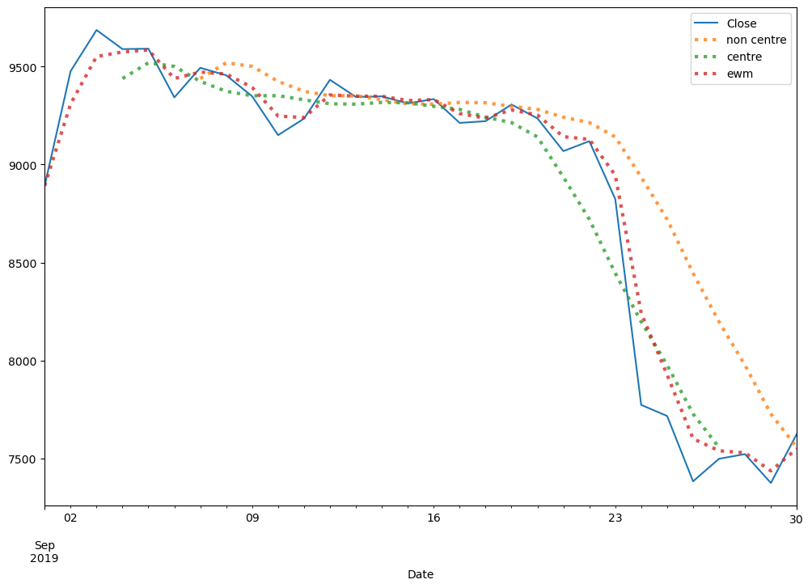
plt.figure(figsize=(12, 8))
bitcoin.loc['2019-09', 'Close'].plot()
for i in np.arange(0.2, 1, 0.2):
bitcoin.loc['2019-09', 'Close'].ewm(alpha=i).mean().plot(label=f'ewm {i}', ls='--', alpha=0.8)
plt.legend()
plt.show()
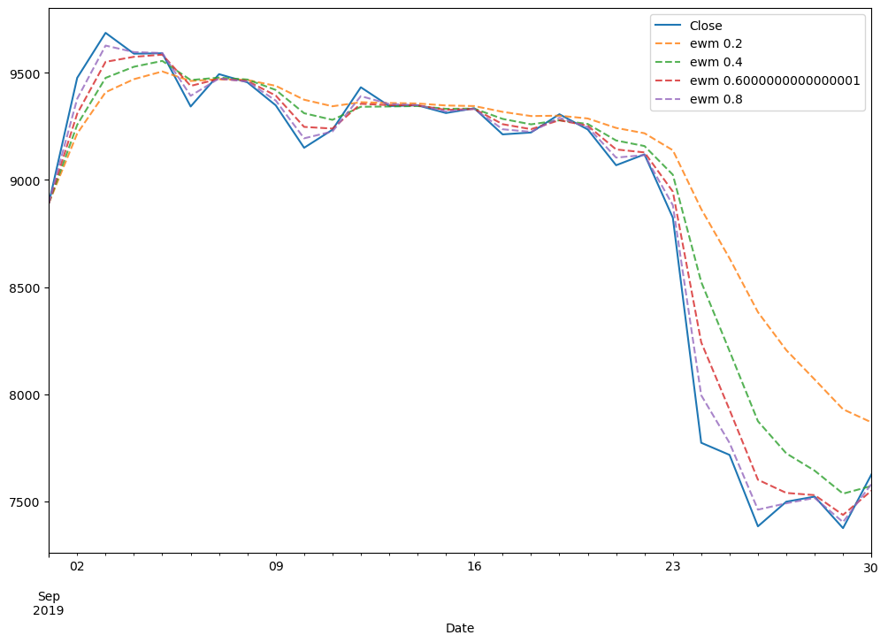
5. Comparaison de 2 série temporelles
ethereum = pd.read_csv('ETH-EUR.csv', index_col='Date', parse_dates=True)
btc_eth = pd.merge(bitcoin, ethereum, on='Date', how='inner', suffixes=('_btc', '_eth'))
btc_eth.iloc[:, [btc_eth.columns.get_loc('Close_btc'), btc_eth.columns.get_loc('Close_eth')]].loc['2019-09'].plot(subplots=True, figsize=(12, 8))
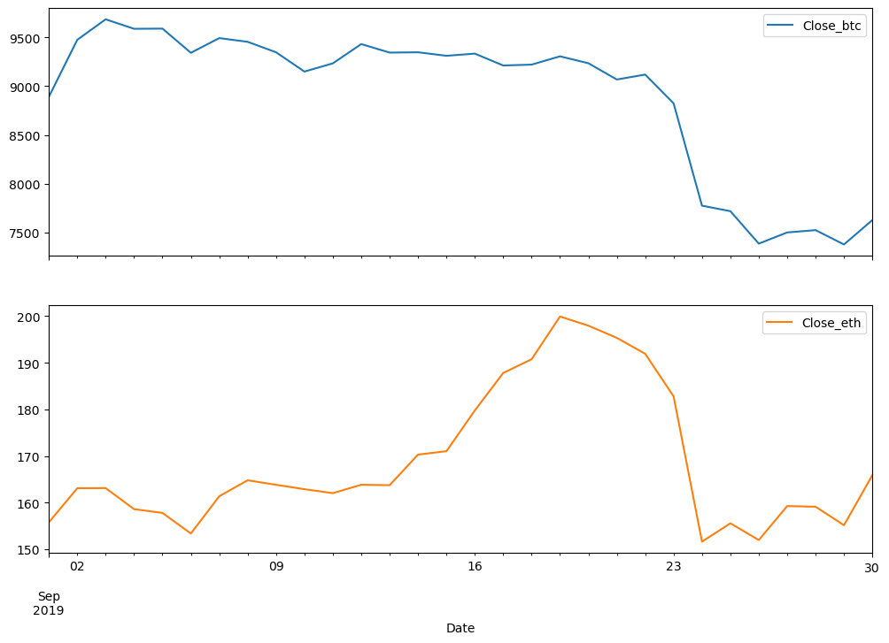
6. Exercice et Solution
Exercice
Implémentation de la Stratégie de la Tortue
La stratégie de la Tortue est une méthode de trading basée sur des seuils de breakout, en utilisant des moyennes glissantes pour identifier des opportunités d'achat et de vente.
Dans cet exercice, vous allez :
- Créer deux seuils :
- Le maximum glissant sur une fenêtre de 28 jours (RollingMax).
- Le minimum glissant sur une fenêtre de 28 jours (RollingMin).
- Identifier les signaux d'achat et de vente :
- Un signal d'achat est généré lorsque le prix de clôture dépasse le RollingMax.
- Un signal de vente est généré lorsque le prix de clôture est inférieur au RollingMin.
- Afficher les graphiques pour visualiser les signaux d'achat et de vente.
Données
Vous utiliserez les données Bitcoin contenues dans le DataFrame bitcoin, qui contient une colonne 'Close' correspondant au prix de clôture.
Étapes à suivre
-
Ajouter des colonnes RollingMax et RollingMin :
- Utilisez la méthode
.rolling(window=28).max()pour calculer le maximum glissant. - Utilisez la méthode
.rolling(window=28).min()pour calculer le minimum glissant.
- Utilisez la méthode
-
Générer les colonnes Buy et Sell :
- Ajoutez une colonne
'Buy'contenant1si le prix de clôture dépasse RollingMax, et0sinon. - Ajoutez une colonne
'Sell'contenant-1si le prix de clôture est inférieur à RollingMin, et0sinon.
- Ajoutez une colonne
-
Tracer les graphiques :
- Dans un graphique, affichez :
- Le prix de clôture (
Close). - Le maximum glissant (
RollingMax). - Le minimum glissant (
RollingMin).
- Le prix de clôture (
- Dans un second graphique, affichez :
- Les signaux d'achat (
Buy). - Les signaux de vente (
Sell).
- Les signaux d'achat (
- Dans un graphique, affichez :
Résultat attendu
Votre graphique final devra inclure :
- Premier graphique :
- La courbe du prix de clôture.
- Les lignes RollingMax et RollingMin.
- Deuxième graphique :
- Les points de signal d'achat (en vert).
- Les points de signal de vente (en rouge).
Exemple attendu :
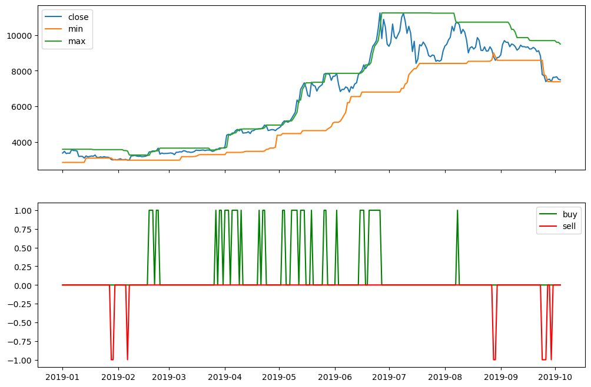
Bonne chance !
💡 Cliquez ici pour voir la solution
Solution
data = bitcoin.copy()
data['Buy'] = np.zeros(len(data))
data['Sell'] = np.zeros(len(data))
data['RollingMax'] = data['Close'].shift(1).rolling(window=28).max()
data['RollingMin'] = data['Close'].shift(1).rolling(window=28).min()
data.loc[data['RollingMax'] < data['Close'], 'Buy'] = 1
data.loc[data['RollingMin'] > data['Close'], 'Sell'] = -1
start ='2019'
end='2019'
fig, ax = plt.subplots(2, figsize=(12, 8), sharex=True)
#plt.figure(figsize=(12, 8))
#plt.subplot(211)
ax[0].plot(data['Close'][start:end])
ax[0].plot(data['RollingMin'][start:end])
ax[0].plot(data['RollingMax'][start:end])
ax[0].legend(['close', 'min', 'max'])
ax[1].plot(data['Buy'][start:end], c='g')
ax[1].plot(data['Sell'][start:end], c='r')
ax[1].legend(['buy', 'sell'])
Chapitre 6 : Visualisation de Données avec Seaborn
Seaborn est une bibliothèque de visualisation de données puissante et facile à utiliser, qui s'appuie sur Matplotlib. Elle permet de créer des graphiques élégants et informatifs, adaptés à l'exploration et à l'analyse de données.
Objectifs du chapitre
À la fin de ce chapitre, vous serez capable de :
- Utiliser Seaborn pour créer des graphiques informatifs et esthétiques.
- Explorer les relations entre différentes caractéristiques grâce à des visualisations avancées.
- Analyser les distributions et corrélations dans vos jeux de données.
Sommaire :
- Chapitre 1 : Pairplot() - La vue d'ensemble
- Chapitire 2 : Visualiser de catégories
- Chapitre 3 : Visualisation de Distributions
import numpy as np
import matplotlib.pyplot as plt
import pandas as pd
import seaborn as sns
iris = sns.load_dataset('iris')
iris.head()
-
sepal_length sepal_width petal_length petal_width species
0 5.1 3.5 1.4 0.2 setosa
1 4.9 3.0 1.4 0.2 setosa
2 4.7 3.2 1.3 0.2 setosa
3 4.6 3.1 1.5 0.2 setosa
4 5.0 3.6 1.4 0.2 setosa
1. Pairplot() : La vue d'ensemble
sns.pairplot(iris, hue='species')

2. Visualiser de catégories
titanic = sns.load_dataset('titanic')
titanic.drop(['alone', 'alive', 'who', 'adult_male', 'embark_town', 'class'], axis=1, inplace=True)
titanic.dropna(axis=0, inplace=True)
titanic.head()
-
survived pclass sex age sibsp parch fare embarked deck
1 1 1 female 38.0 1 0 71.2833 C C
3 1 1 female 35.0 1 0 53.1000 S C
6 0 1 male 54.0 0 0 51.8625 S E
10 1 3 female 4.0 1 1 16.7000 S G
11 1 1 female 58.0 0 0 26.5500 S C
sns.catplot(x='survived', y='age', data=titanic, hue='sex')
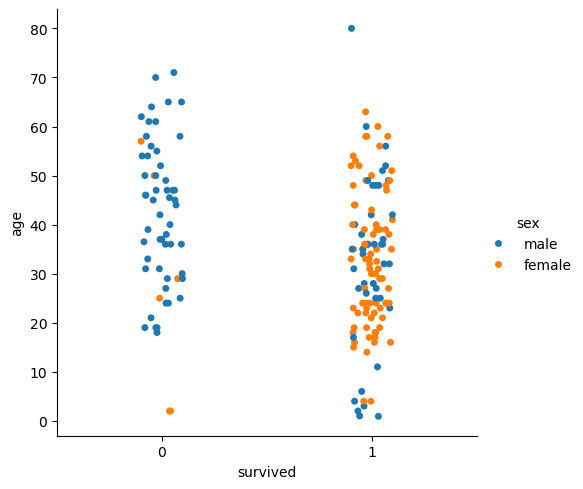
plt.figure(figsize=(32, 8))
sns.boxplot(x='age', y='fare', data=titanic, hue='sex')
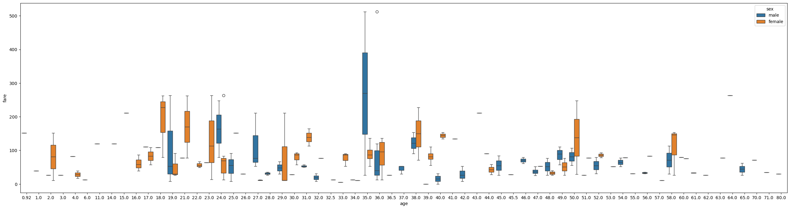
3. Visualisation de Distributions
sns.distplot(titanic['fare'])
sns.jointplot(x='age', y='fare', data=titanic, kind='hex')
# Conversion des colonnes non numériques (object ou category)
for col in titanic.columns:
if titanic[col].dtype == 'object' or titanic[col].dtype.name == 'category':
if titanic[col].nunique() == 2:
# Colonnes binaires
titanic[col] = titanic[col].map({titanic[col].unique()[0]: 0, titanic[col].unique()[1]: 1})
else:
# Colonnes avec plusieurs catégories
titanic[col] = titanic[col].cat.codes if titanic[col].dtype.name == 'category' else pd.factorize(titanic[col])[0]
# Vérification : Toutes les colonnes doivent maintenant être numériques
print(titanic.dtypes)
# Calcul des corrélations et affichage de la heatmap
corr = titanic.corr()
sns.heatmap(corr, annot=True, cmap='coolwarm')
plt.show()
-
survived int64
pclass int64
sex int64
age float64
sibsp int64
parch int64
fare float64
embarked int64
deck int8
dtype: object
Introduction à Scikit-learn
Scikit-learn est l'une des bibliothèques les plus puissantes et populaires pour le machine learning en Python. Elle offre un vaste éventail d'outils pour l'apprentissage supervisé, non-supervisé, le prétraitement des données, la sélection de caractéristiques, et bien plus encore.
Plan du chapitre
1. Sklearn : Ensemble Learning
Découvrez comment combiner plusieurs modèles pour améliorer les performances grâce au Voting, Bagging, Boosting et Stacking.
2. Sklearn : Sélection de Modèle
Apprenez à diviser vos données, évaluer vos modèles avec des courbes de validation et optimiser leurs hyperparamètres.
3. Sklearn : Pre-processing
Explorez les techniques de prétraitement des données, telles que l'encodage, la normalisation et la construction de pipelines.
4. Sklearn : Feature Selection
Identifiez et sélectionnez les caractéristiques les plus pertinentes pour vos modèles grâce à différentes techniques.
5. Sklearn : Apprentissage Non-Supervisé
Maîtrisez des techniques telles que le clustering, la réduction de dimensionnalité et la détection d'anomalies.
6. Sklearn : Apprentissage Supervisé
Plongez dans les algorithmes supervisés tels que la régression, les forêts aléatoires, et le boosting.
Objectifs de cette partie
À la fin de cette partie, vous serez capable de :
- Construire des modèles de machine learning supervisés et non-supervisés avec Scikit-learn.
- Optimiser vos modèles grâce à des outils tels que GridSearchCV et les pipelines.
- Identifier les caractéristiques les plus importantes dans vos jeux de données.
- Prétraiter vos données pour améliorer les performances de vos modèles.
Prêt à commencer ? Rendez-vous dans la première section : Sklearn : Ensemble Learning !
Sklearn : Ensemble Learning
Dans ce chapitre, nous allons explorer les bases de l'apprentissage supervisé avec Sklearn, en abordant les concepts de régression, de classification, et de prédiction à travers des exemples concrets. Nous terminerons par un exercice pour affiner nos compétences en paramétrage de modèles.
Sommaire :
- Chapitre 1 : Régression
- Chapitire 2 : Classification
- Chapitre 3 : Prediction de survie
- Chapitre 4 : Exercice et Solution
import numpy as np
import matplotlib.pyplot as plt
import seaborn as sns
1. Régression
np.random.seed(0)
m = 100 # creation de 100 échantillons
X = np.linspace(0, 10, m).reshape(m,1)
y = X + np.random.randn(m, 1)
plt.scatter(X, y)
from sklearn.linear_model import LinearRegression
model = LinearRegression()
model.fit(X, y) # entrainement du modele
model.score(X, y) # évaluation avec le coefficient de corrélation
-
0.8881140743377214
plt.scatter(X, y)
plt.plot(X, model.predict(X), c='red')
2. Classification
titanic = sns.load_dataset('titanic')
titanic = titanic[['survived', 'pclass', 'sex', 'age']]
titanic.dropna(axis=0, inplace=True)
titanic['sex'].replace(['male', 'female'], [0, 1], inplace=True)
titanic.head()
-
survived pclass sex age
0 0 3 0 22.0
1 1 1 1 38.0
2 1 3 1 26.0
3 1 1 1 35.0
4 0 3 0 35.0
from sklearn.neighbors import KNeighborsClassifier
model = KNeighborsClassifier()
y = titanic['survived']
X = titanic.drop('survived', axis=1)
model.fit(X, y) # entrainement du modele
model.score(X, y) # évaluation
-
0.8417366946778712
3. Prediction de survie
def survie(model, pclass=3, sex=0, age=26):
x = np.array([pclass, sex, age]).reshape(1, 3)
print(model.predict(x))
print(model.predict_proba(x))
survie(model)
-
[0]
[[0.8 0.2]]
4. Exercice et Solution
Écrire un code qui permet de trouver la meilleure valeur de voisin n_neighbors pour le modele de KNeighborsClassifier.
Dans sklearn, il est possible de faire cela avec la classe GridSearchCV. Mais il peut également etre utile de savoir écrire soi-meme ce genre de code de recherche.
💡 Cliquez ici pour voir la solution
SOLUTION
score = []
best_k = 1
best_score = 0
for k in range(best_k, 30):
model = KNeighborsClassifier(n_neighbors=k)
model.fit(X, y)
score.append(model.score(X, y))
if best_score < model.score(X, y):
best_k = k
best_score = model.score(X, y)
print(best_k)
plt.plot(score)
-
3
Sklearn : Sélection de Modele
Dans ce chapitre, nous explorerons les techniques de sélection de modèles en utilisant Scikit-learn. Vous apprendrez à diviser vos données, évaluer les performances de vos modèles avec des courbes de validation et d'apprentissage, et optimiser leurs hyperparamètres à l'aide de GridSearchCV et d'autres outils.
Sommaire :
- Chapitre 1 : Train Test Split
- Chapitire 2 : Validation Set et Cross Validation
- Chapitre 3 : Validation Curve
- Chapitre 4 : GridSearchCV
- Chapitre 5 : Confusion Matrix
- Chapitre 6 : Learning Curve
import numpy as np
import matplotlib.pyplot as plt
from sklearn.datasets import load_iris
iris = load_iris()
X = iris.data
y = iris.target
plt.scatter(X[:, 0], X[:, 1], c=y, alpha=0.8)
1. Train Test Split
from sklearn.model_selection import train_test_split
X_train, X_test, y_train, y_test = train_test_split(X, y, test_size=0.2, random_state=5)
print('Train set:', X_train.shape)
print('Test set:', X_test.shape)
-
Train set: (120, 4)
Test set: (30, 4)
plt.figure(figsize=(12, 4))
plt.subplot(121)
plt.scatter(X_train[:, 0], X_train[:, 1], c=y_train, alpha=0.8)
plt.title('Train set')
plt.subplot(122)
plt.scatter(X_test[:, 0], X_test[:, 1],c=y_test, alpha=0.8)
plt.title('Test set')
from sklearn.neighbors import KNeighborsClassifier
model = KNeighborsClassifier(n_neighbors=1)
model.fit(X_train, y_train)
print('train score:', model.score(X_train, y_train))
print('test score:', model.score(X_test, y_test))
-
train score: 1.0
test score: 0.9
2. Validation Set et Cross Validation
from sklearn.model_selection import cross_val_score
model = KNeighborsClassifier()
cross_val_score(model, X_train, y_train, cv=5, scoring='accuracy')
-
array([1. , 1. , 1. , 0.95833333, 0.95833333])
val_score = []
for k in range(1, 50):
score = cross_val_score(KNeighborsClassifier(k), X_train, y_train, cv=5).mean()
val_score.append(score)
plt.plot(val_score)
3. Validation Curve
from sklearn.model_selection import validation_curve
model = KNeighborsClassifier()
k = np.arange(1, 50)
train_score, val_score = validation_curve(model, X_train, y_train,
param_name='n_neighbors', param_range=k, cv=5)
plt.plot(k, val_score.mean(axis=1), label='validation')
plt.plot(k, train_score.mean(axis=1), label='train')
plt.ylabel('score')
plt.xlabel('n_neighbors')
plt.legend()
4. GridSearchCV
from sklearn.model_selection import GridSearchCV
param_grid = {'n_neighbors': np.arange(1, 20),
'metric': ['euclidean', 'manhattan']}
grid = GridSearchCV(KNeighborsClassifier(), param_grid, cv=5)
grid.fit(X_train, y_train)
-
param_grid = {'n_neighbors': np.arange(1, 20),
'metric': ['euclidean', 'manhattan']}
grid = GridSearchCV(KNeighborsClassifier(), param_grid, cv=5)
grid.fit(X_train, y_train)
print(grid.best_score_)
print(grid.best_params_)
-
0.9833333333333334
{'metric': 'euclidean', 'n_neighbors': 5}
model = grid.best_estimator_
model.score(X_test, y_test)
-
0.9333333333333333
5. Confusion Matrix
from sklearn.metrics import confusion_matrix
confusion_matrix(y_test, model.predict(X_test))
-
array([[ 8, 0, 0],
[ 0, 9, 2],
[ 0, 0, 11]])
6. Learning Curve
from sklearn.model_selection import learning_curve
N, train_score, val_score = learning_curve(model, X_train, y_train,
train_sizes=np.linspace(0.1, 1, 10), cv=5)
print(N)
plt.plot(N, train_score.mean(axis=1), label='train')
plt.plot(N, val_score.mean(axis=1), label='validation')
plt.xlabel('train_sizes')
plt.legend()
-
[ 9 19 28 38 48 57 67 76 86 96]
Sklearn : Pre-processing
Dans ce chapitre, nous allons explorer les outils de prétraitement de données offerts par Scikit-learn. Nous aborderons des techniques d'encodage, de normalisation, de création de caractéristiques polynomiales, de discrétisation, et nous verrons comment les intégrer efficacement dans des pipelines pour optimiser vos workflows de machine learning.
Sommaire :
- Chapitre 1 : Encodage
- Chapitire 2 : Normalisation
- Chapitre 3 : Polynomial Features
- Chapitre 4 : Discretisation
- Chapitre 5 : Pipelines
1. Encodage
Encodage LabelEncoder et LabelBinarizer
import numpy as np
import matplotlib.pyplot as plt
from sklearn.preprocessing import LabelEncoder, LabelBinarizer, OrdinalEncoder, OneHotEncoder
y = np.array(['chat', 'chien', 'chat', 'oiseau'])
encoder = LabelEncoder()
encoder.fit_transform(y)
-
array([0, 1, 0, 2])
encoder.inverse_transform(np.array([0, 0, 2]))
-
array(['chat', 'chat', 'oiseau'], dtype='<U6')
encoder = LabelBinarizer()
encoder.fit_transform(y)
-
array([[1, 0, 0],
[0, 1, 0],
[1, 0, 0],
[0, 0, 1]])
Encodage Ordinal et Encodage OneHot
X = np.array([['chat', 'poils'],
['chien', 'poils'],
['chat', 'poils'],
['oiseau', 'plumes']])
encoder = OrdinalEncoder()
encoder.fit_transform(X)
-
array([[0., 1.],
[1., 1.],
[0., 1.],
[2., 0.]])
encoder = OneHotEncoder(sparse=False)
encoder.fit_transform(X)
-
array([[1., 0., 0., 0., 1.],
[0., 1., 0., 0., 1.],
[1., 0., 0., 0., 1.],
[0., 0., 1., 1., 0.]])
2. Normalisation
from sklearn.preprocessing import MinMaxScaler, StandardScaler, RobustScaler
from sklearn.datasets import load_iris
iris = load_iris()
X = iris.data
MinMaxScaler
X_minmax = MinMaxScaler().fit_transform(X)
plt.scatter(X[:, 2], X[:, 3])
plt.scatter(X_minmax[:, 2], X_minmax[:, 3])

StandardScaler
X_stdscl = StandardScaler().fit_transform(X)
plt.scatter(X[:, 2], X[:, 3])
plt.scatter(X_stdscl[:, 2], X_stdscl[:, 3])

RobustScaler
X_robust = RobustScaler().fit_transform(X)
plt.scatter(X[:, 2], X[:, 3])
plt.scatter(X_robust[:, 2], X_robust[:, 3])

3. Polynomial Features
from sklearn.preprocessing import PolynomialFeatures
from sklearn.linear_model import LinearRegression
m = 100
X = np.linspace(0, 4, m).reshape((m, 1))
y = X**2 + 5*np.cos(X) + np.random.randn(m, 1)
model = LinearRegression().fit(X, y)
y_pred = model.predict(X)
plt.scatter(X, y)
plt.plot(X, y_pred, c='r', lw=3)

X_poly = PolynomialFeatures(3).fit_transform(X)
model = LinearRegression().fit(X_poly, y)
y_pred = model.predict(X_poly)
plt.scatter(X, y)
plt.plot(X, y_pred, c='r', lw=3)

4. Discretisation
from sklearn.preprocessing import Binarizer, KBinsDiscretizer
X = np.linspace(0, 5, 10).reshape((10, 1))
np.hstack((X, Binarizer(threshold=3).fit_transform(X)))
-
array([[0. , 0. ],
[0.55555556, 0. ],
[1.11111111, 0. ],
[1.66666667, 0. ],
[2.22222222, 0. ],
[2.77777778, 0. ],
[3.33333333, 1. ],
[3.88888889, 1. ],
[4.44444444, 1. ],
[5. , 1. ]])
KBinsDiscretizer(n_bins=6).fit_transform(X).toarray()
-
array([[1., 0., 0., 0., 0., 0.],
[1., 0., 0., 0., 0., 0.],
[0., 1., 0., 0., 0., 0.],
[0., 1., 0., 0., 0., 0.],
[0., 0., 1., 0., 0., 0.],
[0., 0., 0., 1., 0., 0.],
[0., 0., 0., 1., 0., 0.],
[0., 0., 0., 0., 1., 0.],
[0., 0., 0., 0., 0., 1.],
[0., 0., 0., 0., 0., 1.]])
5. Pipelines
from sklearn.pipeline import make_pipeline
from sklearn.linear_model import SGDClassifier
from sklearn.model_selection import train_test_split
X = iris.data
y = iris.target
X_train, X_test, y_train, y_test = train_test_split(X, y, random_state=0)
model = make_pipeline(StandardScaler(), SGDClassifier())
model.fit(X_train, y_train)
model.score(X_test, y_test)
-
0.9473684210526315
from sklearn.model_selection import GridSearchCV
model = make_pipeline(PolynomialFeatures(),
StandardScaler(),
SGDClassifier(random_state=0))
params = {
'polynomialfeatures__degree':[2, 3, 4],
'sgdclassifier__penalty':['l1', 'l2']
}
grid = GridSearchCV(model, param_grid=params, cv=4)
grid.fit(X_train, y_train)
-
GridSearchCV
estimator: Pipeline
PolynomialFeatures
StandardScaler
SGDClassifier
grid.score(X_test, y_test)
-
0.9736842105263158
Sklearn : Feature Selection
Dans ce chapitre, nous explorerons différentes techniques pour sélectionner les caractéristiques les plus pertinentes dans vos jeux de données. Ces approches, allant de l'analyse de la variance à la sélection basée sur des modèles, vous aideront à simplifier vos modèles tout en améliorant leurs performances.
Sommaire :
- Chapitre 1 : Variance Threshold
- Chapitire 2 : SelectKBest
- Chapitre 3 : Recursive feature Elimination
- Chapitre 4 : SelectFromModel
import numpy as np
import matplotlib.pyplot as plt
import pandas as pd
1. Variance Threshold
from sklearn.feature_selection import VarianceThreshold
from sklearn.datasets import load_iris
iris = load_iris()
X = iris.data
y = iris.target
plt.plot(X)
plt.legend(iris.feature_names)
X.var(axis=0)
-
array([0.68112222, 0.18871289, 3.09550267, 0.57713289])
selector = VarianceThreshold(threshold=0.2)
selector.fit(X)
-
VarianceThreshold
VarianceThreshold(threshold=0.2)
selector.get_support()
-
array([ True, False, True, True])
np.array(iris.feature_names)[selector.get_support()]
-
array(['sepal length (cm)', 'petal length (cm)', 'petal width (cm)'],
dtype='<U17')
selector.variances_
-
array([0.68112222, 0.18871289, 3.09550267, 0.57713289])
2. SelectKBest
from sklearn.feature_selection import SelectKBest, chi2, f_classif
chi2(X, y)
-
(array([ 10.81782088, 3.7107283 , 116.31261309, 67.0483602 ]),
array([4.47651499e-03, 1.56395980e-01, 5.53397228e-26, 2.75824965e-15]))
selector = SelectKBest(f_classif, k=2)
selector.fit(X, y)
selector.scores_
-
array([ 119.26450218, 49.16004009, 1180.16118225, 960.0071468 ])
np.array(iris.feature_names)[selector.get_support()]
-
array(['petal length (cm)', 'petal width (cm)'], dtype='<U17')
3. Recursive feature Elimination
from sklearn.feature_selection import RFECV
from sklearn.linear_model import SGDClassifier
selector = RFECV(SGDClassifier(random_state=0), step=1, min_features_to_select=2, cv=5)
selector.fit(X, y)
print(selector.ranking_)
print(selector.score)
-
[2 1 1 1]
<bound method RFE.score of RFECV(cv=5, estimator=SGDClassifier(random_state=0), min_features_to_select=2)>
np.array(iris.feature_names)[selector.get_support()]
-
array(['sepal width (cm)', 'petal length (cm)', 'petal width (cm)'],
dtype='<U17')
4. SelectFromModel
from sklearn.feature_selection import SelectFromModel
X = iris.data
y = iris.target
selector = SelectFromModel(SGDClassifier(random_state=0), threshold='mean')
selector.fit(X, y)
selector.estimator_.coef_
-
array([[ 8.64029104, 27.2851296 , -40.01819009, -17.73533424],
[ -5.48888269, -58.79616709, 22.88584985, -54.14457159],
[-81.28026953, -75.17372078, 130.76437145, 131.39608339]])
np.array(iris.feature_names)[selector.get_support()]
-
array(['petal length (cm)', 'petal width (cm)'], dtype='<U17')
Sklearn : Apprentissage Non-Supervisé
Dans ce chapitre, nous explorerons les algorithmes d'apprentissage non-supervisé avec Scikit-learn. Vous apprendrez à segmenter des données à l'aide du clustering (K-Means), à détecter des anomalies avec l'Isolation Forest, et à réduire la dimensionnalité avec l'analyse en composantes principales (PCA).
Sommaire :
import numpy as np
import matplotlib.pyplot as plt
from sklearn.datasets import make_blobs
1. K-Means Clustering
from sklearn.cluster import KMeans
# Génération de données
X, y = make_blobs(n_samples=100, centers=3, cluster_std=0.4, random_state=0)
plt.scatter(X[:,0], X[:,1])

model = KMeans(n_clusters=3)
model.fit(X)
model.predict(X)
plt.scatter(X[:,0], X[:,1], c=model.predict(X))
plt.scatter(model.cluster_centers_[:,0], model.cluster_centers_[:,1], c='r')
model.score(X)

Elbow Method
inertia = []
K_range = range(1, 20)
for k in K_range:
model = KMeans(n_clusters=k).fit(X)
inertia.append(model.inertia_)
plt.plot(K_range, inertia)
plt.xlabel('nombre de clusters')
plt.ylabel('Cout du modele (Inertia)')
-
Text(0, 0.5, 'Cout du modele (Inertia)')

2. Detection d'anomalies avec Isolation Forest
from sklearn.ensemble import IsolationForest
X, y = make_blobs(n_samples=50, centers=1, cluster_std=0.1, random_state=0)
X[-1,:] = np.array([2.25, 5])
plt.scatter(X[:,0], X[:, 1])

model = IsolationForest(contamination=0.01)
model.fit(X)
plt.scatter(X[:,0], X[:, 1], c=model.predict(X))

Application : Digits Outliers
from sklearn.datasets import load_digits
digits = load_digits()
images = digits.images
X = digits.data
y = digits.target
plt.imshow(images[0])

model = IsolationForest(random_state=0, contamination=0.02)
model.fit(X)
outliers = model.predict(X) == -1
plt.figure(figsize=(12, 3))
for i in range(10):
plt.subplot(1, 10, i+1)
plt.imshow(images[outliers][i])
plt.title(y[outliers][i])

2. PCA : Reduction de dimension
Visualisation 2D
from sklearn.decomposition import PCA
model = PCA(n_components=2)
model.fit(X)
-
PCA
PCA(n_components=2)
x_pca = model.transform(X)
plt.scatter(x_pca[:,0], x_pca[:,1], c=y)

plt.figure()
plt.xlim(-30, 30)
plt.ylim(-30, 30)
for i in range(100):
plt.text(x_pca[i,0], x_pca[i,1], str(y[i]))

Compression de données
n_dims = X.shape[1]
model = PCA(n_components=n_dims)
model.fit(X)
variances = model.explained_variance_ratio_
meilleur_dims = np.argmax(np.cumsum(variances) > 0.90)
plt.bar(range(n_dims), np.cumsum(variances))
plt.hlines(0.90, 0, meilleur_dims, colors='r')
plt.vlines(meilleur_dims, 0, 0.90, colors='r')

model = PCA(n_components=0.99)
model.fit(X)
-
PCA
PCA(n_components=0.99)
X_compress = model.fit_transform(X)
X_decompress = model.inverse_transform(X_compress)
plt.subplot(1, 2, 1)
plt.imshow(X[0,:].reshape((8,8)), cmap='gray')
plt.title('originel')
plt.subplot(1, 2, 2)
plt.imshow(X_decompress[0,:].reshape((8,8)), cmap='gray')
plt.title('Compressé')

Sklearn : Ensemble Learning
Dans ce chapitre, nous découvrirons les approches d'apprentissage par ensemble, qui combinent plusieurs modèles pour améliorer les performances. Nous explorerons le Voting Classifier, le Bagging, le Boosting, et le Stacking, avec des exemples pratiques pour chaque méthode.
Sommaire :
import numpy as np
import matplotlib.pyplot as plt
from sklearn.datasets import make_moons
from sklearn.model_selection import train_test_split
from matplotlib.colors import ListedColormap
def plot_decision_boundary(clf, X, y, axes=[-1.5, 2.45, -1, 1.5], alpha=0.5, contour=True):
h = .02
x_min, x_max = X[:, 0].min() - .5, X[:, 0].max() + .5
y_min, y_max = X[:, 1].min() - .5, X[:, 1].max() + .5
xx, yy = np.meshgrid(np.arange(x_min, x_max, h),
np.arange(y_min, y_max, h))
Z = clf.predict_proba(np.c_[xx.ravel(), yy.ravel()])[:, 1]
Z = Z.reshape(xx.shape)
plt.contourf(xx, yy, Z, alpha=.5)
plt.scatter(X[:,0], X[:,1], c=y, alpha=0.8, edgecolors='k')
X, y = make_moons(n_samples=500, noise=0.3, random_state=0)
plt.scatter(X[:,0], X[:,1], c=y, alpha=0.8)
X_train, X_test, y_train, y_test = train_test_split(X, y, test_size=0.3, random_state=0)
1. Voting Classifier
from sklearn.linear_model import SGDClassifier
from sklearn.tree import DecisionTreeClassifier
from sklearn.neighbors import KNeighborsClassifier
from sklearn.ensemble import VotingClassifier
model_1 = SGDClassifier(random_state=0)
model_2 = DecisionTreeClassifier(random_state=0)
model_3 = KNeighborsClassifier(n_neighbors=2)
model_4 = VotingClassifier([('SGD', model_1),
('Tree', model_2),
('KNN', model_3)],
voting='hard')
for model in (model_1, model_2, model_3, model_4):
model.fit(X_train, y_train)
print(model.__class__.__name__, model.score(X_test, y_test))
-
SGDClassifier 0.84
DecisionTreeClassifier 0.86
KNeighborsClassifier 0.86
VotingClassifier 0.8733333333333333
2. Bagging
from sklearn.ensemble import BaggingClassifier, RandomForestClassifier
model = BaggingClassifier(base_estimator=KNeighborsClassifier(),
n_estimators=100)
model.fit(X_train, y_train)
model.score(X_test, y_test)
-
0.88
model = RandomForestClassifier(n_estimators=100)
model.fit(X_train, y_train)
model.score(X_test, y_test)
-
0.8733333333333333
plot_decision_boundary(model, X_train, y_train)
3. Boosting
from sklearn.ensemble import AdaBoostClassifier, GradientBoostingClassifier
model = AdaBoostClassifier(n_estimators=100)
model.fit(X_train, y_train)
model.score(X_test, y_test)
-
0.88
plot_decision_boundary(model, X_train, y_train)
4. Stacking
from sklearn.ensemble import StackingClassifier
model = StackingClassifier([('SGD', model_1),
('Tree', model_2),
('KNN', model_3)],
final_estimator=KNeighborsClassifier())
model.fit(X_train, y_train)
model.score(X_test, y_test)
-
0.8666666666666667
plot_decision_boundary(model, X_train, y_train)